BOOK ONE
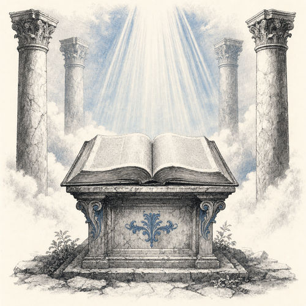
The Book of Saint Kosus
Four Pillars
CHRONESIS · PHILOTIMOS · ALETHERIS · TIMARIS
The Four Pillars
Prologue — spoken by Kosus
I am Kosus.
I did not write this book to be followed. I wrote it because I feared it would be forgotten — and forgetting is worse than losing. What you lose, you can search for. What you forget, you no longer know to miss.
I have watched the world for a long time. What people built and what they tore down. What they counted and what they stopped counting because it no longer fit their numbers. And then I saw something simple, something that had lain beneath everything all along, and which we thought was self-evident — until it was almost gone.
I saw four pillars.
They carried no temple, no throne, and no law. They carried the people themselves. Upright, in a time that would otherwise have broken them.
The first pillar is Chronesis. She is time. Not the time of clocks and calendars, not the time you fill so as not to feel it. She is the time you give to another, and which thereby gains weight. Every hour you give away becomes an hour that can no longer be lost — it now exists in two lives. Whoever honours time is honoured by time. Whoever wastes her is forgotten by her.
The second pillar is Philotimos. She is love. But not the love that must be earned, and not the love that must be paid for. Love as a gift — given without account, received without debt. Whoever weighs love on a scale has already lost her before he measures her. She is not an exchange. She is a gift, and she asks only that you do not sell her.
The third pillar is Aletheris. She is honesty. Without her, the other three stand on sand. Truth is not hard because she is cruel, but because she bears weight. Every lie hollows the pillars out from within, and no one sees it happening — until the day everything falls and one wonders how. Honesty is not something you display when it suits you. It is something you are, even when no one is watching. Especially then.
The fourth pillar is Timaris. She is respect. In the world I saw, respect was the only currency that never lost its value. Gold rusts in the soul. Coins lose their exchange rate. Promises evaporate. But respect — once given, once earned, once returned — stands firm. It is the coin with which people truly pay one another, and the only account that settles itself once both parties have been honest.
Four pillars. I needed no more. No one needs more.
Whoever opens this book opens no doctrine and no creed. You are not opening a law you must obey, nor a god you must worship. You are opening an agreement — with yourself, with time, with whoever stands beside you, and with whoever comes after you.
Read slowly. The Kosaris is in no hurry. She has waited as long as there have been people willing to listen, and she will wait as long as there remains one person who asks: what, in the end, did everything we built stand upon?
The answer lies in the tales that follow.
It was there all along.
— Kosus
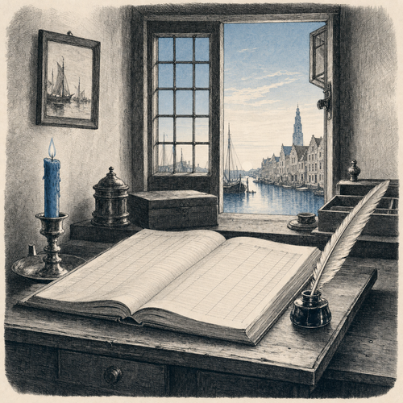
Foreword
By Jacobus van Merksteijn
This is Book One of the Kosaris. It is a book of tales.
The tales are short. They take place in a harbour town you will not find on any map. In that town live a baker named Demira, a fisherman named Alkion, a weaver named Klytia, and an old man named Kosus. Later a Knight from Malta arrives, named Petros, and a granddaughter of Demira's named Anthea.
They do not exist. They do exist. Every person who, after reading a tale, does something he would not otherwise have done, gives their existence one more day.
The Kosaris is not a book of gods. It is a book of the group. Whoever reads it and recognises herself belongs. There are no priests. There are no ceremonies. There is no purchase. There is only what you read, and what you do with what you have read.
Each tale ends with a short line beginning "Kosus says". That line is not the ending. The tale is the ending. The line is a handhold, the way a proverb is a handhold.
I wish you a good reading.
Part I
In which Demira the baker's daughter grows up in the harbour village and meets the old man on the quay for the first time.
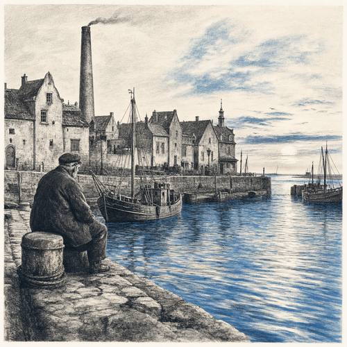
Tale 1
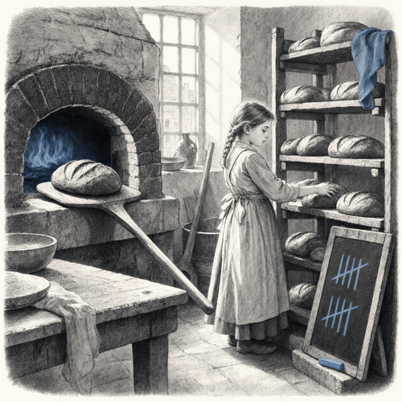
There was, in a harbour town, a baker who had baked bread for forty years. Every morning at four he rose. He kneaded the dough. He fired the oven. He sold his bread to the people of the town. They knew him, he knew them. They knew what his bread was worth, and he knew what their money was worth. Every morning they said good morning.
The baker had a daughter named Demira. She was nine then. She helped her father count the loaves. She loved the arithmetic of it. She loved the moment when the number of loaves on the rack matched what was written on the paper. Then she knew the world added up.
One day a man in a fine suit arrived who had calculated that the baker could work more efficiently. He said: if you make your bread twice as large and use half the flour, you will sell more bread per hour. The baker did it. His bread became twice as large and half as good. People kept buying, for they saw only that the loaves were bigger.
Demira noticed something. She saw that the paper still added up — the number of loaves matched what had been sold. But she also saw that the people who ate the bread looked different when they came back three days later. Faster. More tired. Some old women stopped coming back for their second loaf. She told her father: the number is right, but the people are no longer right. Her father said: you do not understand yet, child. That is how the world works now.
Then came a second man in a finer suit still, who had calculated that the baker could become even more efficient by having his bread made in a factory outside the town. The baker did it. His bread became cheaper and the baker disappeared behind his counter. People kept buying, for they saw only that it was cheaper.
Demira noticed something again. She saw that the money people paid no longer stayed in the village. It travelled to a factory in another country and never returned. In the old days, when her father received a guilder, that guilder went to the blacksmith. The blacksmith gave her a shoe. The shoe was made by the blacksmith from leather from the tanner. The tanner had given the guilder back to the baker for his bread. That was a circle. Now there was a line. And the line ended somewhere Demira had never been.
Then came a third man, in the finest suit of all, who had calculated that the people of the town could buy their bread without ever touching bread. They pressed a button, and the bread arrived at the door. The baker had died, the factory stood in another country, and the people ate bread they could no longer thank anyone for.
On the day the people walked to their pantry and found no bread there, they looked at one another and no longer recognised each other. They had lived in the same town for forty years and did not know who they were together. They had lost their good morning when they lost their baker, and they had not noticed.
Demira was sixteen then. She walked through the town that was no longer a town, and she looked for an oven. She found one at the harbour, behind an old tavern. The oven had been cold for fifteen years. She lit it. It took three days before she understood the temperature. It took three weeks before her bread was edible. It took three months before people came to buy. And on the day the first old woman came back for her second loaf that week, Demira knew she had brought back something that went further than bread.
Kosus says: every loaf baked by no one you know is a good morning you gave away without knowing what you were giving away.
Tale 2
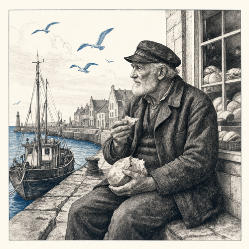
Demira's oven stood at the harbour. From behind her counter she watched the ships all day. She saw them come in and she saw them sail out. She learned to know the flags without ever opening a school geography book. She knew when a storm was coming by the way the gulls circled above the quay.
One afternoon an old man stood at her counter. His hands were brown from the sun and his eyes were sharp. He bought half a loaf and said: you brought back your grandfather's oven. Demira said: my grandfather had an oven? The old man said: every oven on this harbour is someone's grandfather's oven.
He stayed and ate his bread at the quay. Demira brought him a glass of water. She asked: did you know my grandfather? The old man said: I knew him when I was as old as you. He baked the bread my father bought when my father brought me here on the day my mother died. I ate that bread on the quay where you now stand. I still remember how it tasted.
Demira said: how can you remember bread from sixty years ago? The old man said: bread baked by someone you know is not forgotten. Bread baked by no one is not remembered. That is the difference between food and memory.
The old man came back. He came every week. He always bought the same thing: half a loaf and a glass of water. He stayed and ate at the quay. Sometimes he said something, sometimes nothing. Demira noticed that the other customers greeted him when they saw him. The fishermen called him Kosus. The harbourmaster called him master. The children walked alongside him when he strolled through the narrow streets.
One day Demira asked: why do they call you Kosus? The old man said: that is not my name. That is what I do. I read the signs no one reads any more, and I give them back to whoever is willing to accept them. Some are not willing. Some are. For those who are, the world becomes legible. For the others it remains a secret that is eating them alive.
Demira said: can you read me? The old man looked at her and said: you read yourself. You lit the oven when the others no longer knew what an oven was. That is the first letter. Whoever knows the first letter learns the next one on their own.
Kosus says: the harbour is not where the ships arrive. The harbour is where someone saw them arrive and is still there when they leave.
Part II
In which Kosus tells Demira how the world sails, and why the bridge no longer sees the bow.
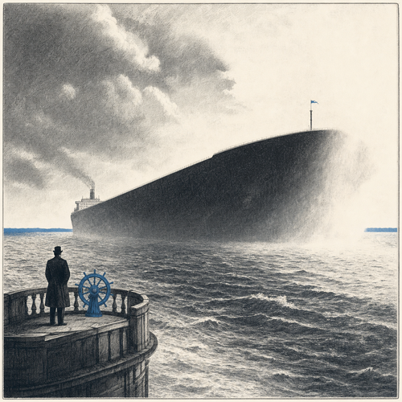
Tale 3
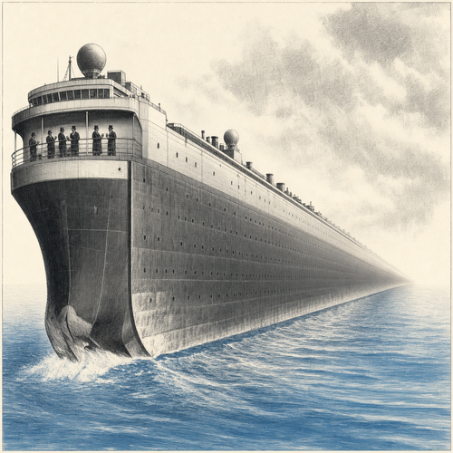
Kosus told Demira about a ship. He said: there sails a ship ten kilometres long. On that ship a commander sits on the bridge. The bridge lies at the stern. The bow sails ten kilometres ahead. Between the bridge and the bow the distance is so great that the commander cannot see the bow.
Demira said: that is a strange ship. Kosus said: it is not one ship, there are five. France, England, Italy, Germany, Spain. Each ship has a bridge and a bow and a long distance between them. On each bridge sits a commander who receives daily reports that the ship is moving forward. The commanders are connected to one another by long cables. They hold meetings. They drink coffee. They sign papers.
What happens to the bows, asked Demira. Kosus said: the bows are crumpling. The water has grown resistant and the bows meet resistance. What do the commanders do? They give more steam. More coal on the fire. More steam. More resistance. More steam. And in the engine room men toil and no one asks whether the ship is still sailing anywhere.
Demira thought. She said: who stands on the bow? Kosus said: that is the right question. On the bow stand the people. The fishermen, the bakers, the smiths, the teachers, the nurses. They feel the ship crumpling because they stand against it. They shout upward. But the bridge is too far, and the wind does not carry their voices up.
Why do the commanders not look down, asked Demira. Kosus said: because it is brighter inside the bridge than outside. Whoever sits in a lit room and looks outward sees only his own reflection. The commanders see their own faces in the glass. They think they are looking at the sea. They are looking at themselves.
Demira said: and us, on the quay? We see the bow from the side, don't we? Kosus said: that is your fortune and your burden. Whoever stands on the quay sees the crumpling. Whoever stands on the bridge sees his own reflection. If you do not shout to the bridge, no one hears it. If you do shout, no one hears it either. But whoever shouts from the quay and is not heard is a different person from whoever stays silent on the quay.
Kosus says: whoever sees the crumpling and stays silent becomes the crumpling. Whoever sees the crumpling and calls out becomes the harbour.
Tale 4
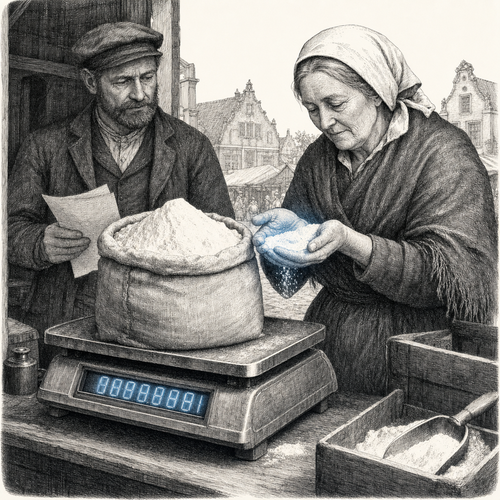
Demira received from her supplier a sack of flour that was two kilos lighter than the label claimed. She weighed it three times. She called the supplier. The supplier said: our paperwork says twenty-five kilos. Demira said: my scale says twenty-three. The supplier said: our scale is certified. Demira said: my scale is certified too. The supplier said: then there is a mistake somewhere. The customer is king. We will send you a compensation.
The compensation arrived. It was not a sack of flour, it was a voucher for a future sack. Demira called again. The supplier said: we have credited you. Our books now show you two kilos in credit. Demira said: but today's bread I baked with twenty-four kilos of flour instead of twenty-five. I have already sold that bread. My customers received less bread than they paid for.
The supplier said: on our books it adds up. Demira said: on my oven it does not add up.
She went to Kosus with her account. Kosus looked at the paper and said: you have found the problem of this century. Demira said: which problem? Kosus said: the problem that what adds up on paper no longer needs to add up on the scale. In the old days the paper was an imprint of the scale. Now the scale is an imprint of the paper. When the two no longer find each other, it is not the scale that is wrong but the paper. And whoever makes the paper wins.
Demira said: what can I do? Kosus said: weigh every sack. Tell every supplier that you weigh. Dismiss the suppliers who complain that you weigh. Work only with those who let themselves be weighed by you. It will cost you customers at first, for most have learned to live with the paper. But the customers who remain will come every week.
Demira did what Kosus said. She lost three suppliers and found four who did not complain. Her bread again became twenty-five kilos for every twenty-five kilos. Her customers tasted the difference. They could not explain what it was. They only said: your bread has become real.
Kosus says: what adds up on paper and not on the scale does not add up. Whoever trusts the paper and ignores the scale has lost the guilder and still holds the bill.
Tale 5
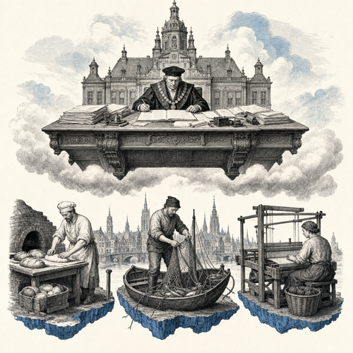
The mayor of the harbour town came to the market and asked Demira if she would stop by. She took off her apron, closed the shop, and followed him. His office smelled of old paper.
The mayor said: Demira, we have a problem. The municipality is short of money. We must cut back. I want to ask the bakers for a small tax. Demira said: how much? The mayor said: five percent of your turnover. Demira said: then I sell at a loss. My margin is three percent.
The mayor was surprised. He said: that cannot be, you have been open three years, you would not run three years on a loss margin. Demira said: my margin is three percent on every loaf. I have run three years because I work seven days a week without counting a wage for myself. The bread is three percent profit, my labour is zero. If you ask five percent of my turnover, I will pay you by pushing my labour further below zero. You cannot do that.
The mayor flipped through his papers and said: our books show that a baker makes eight percent profit on average. Demira said: who calculated that? The mayor said: the chamber of commerce. Demira said: which baker told them that? The mayor did not know.
Demira said: may I make you a proposal? Come to me tomorrow morning at four. Mix the dough with me. Bake for three hours. Sell for an hour. Count the till with me. And then tell me whether five percent is reasonable.
The mayor came. He was astonished at how heavy the kneading was for arms that had held only pens for thirty years. He saw the bread go into the oven and come out nearly black if you waited a minute too long. He saw Demira give an old woman half a loaf for free because the woman had no money that week. He saw the guilder find its own way by the end of the day.
At the end of the day the mayor said: I was wrong. I will go back to the council with a different proposal. Demira said: which proposal? The mayor said: that we levy the tax on whoever can carry it. Not on whoever passes it on to the old woman. Demira said: then today you have become something more important than mayor.
The next day a letter lay on her counter. The letter said that the bakers would pay no tax, but that the factories bringing in bread from elsewhere would contribute ten percent. The letter was signed by the mayor. Beneath his signature, in smaller letters, it read: learned from Demira, oven at the harbour.
Kosus says: a bill that falls on someone who cannot bear it is not a bill but a coffin. A bill that falls on someone who can bear it is a bill.
Part III
In which Anthea, Demira's granddaughter, grows up ten years later and sees the dimensions school wants to unteach her.
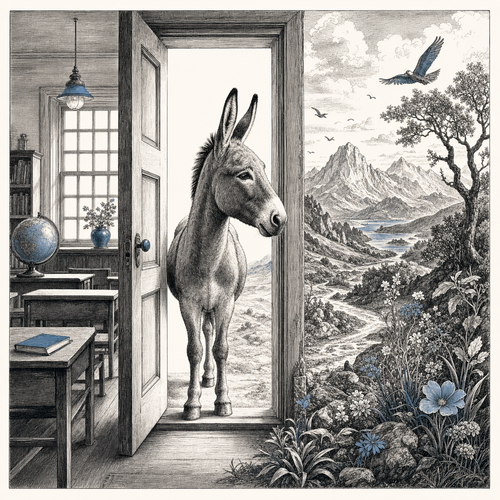
Tale 6
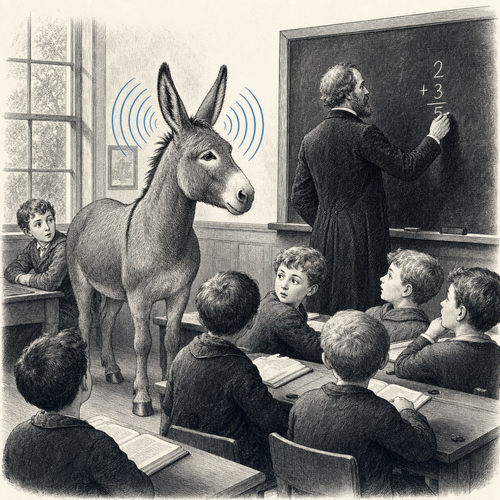
Demira was seventeen when she asked Kosus: why are there so many people in the village who have everything and still do not seem happy? Kosus said: that is Pinocchio's sickness.
He sat down on the quay wall and Demira sat beside him. Kosus said: do you know the story of Pinocchio? Demira said: the wooden puppet who wanted to become a boy. Kosus said: that one. In that story, one day, a man took Pinocchio to the Land of Toys. In the Land of Toys no one had to go to school. There were only games and sweets, and no parents to say it was enough. Pinocchio thought: this is paradise. He stayed. All the children stayed.
What happened, asked Demira. Kosus said: slowly they turned into donkeys. First their ears grew long, and they laughed about it. Then they grew tails, and they thought it was funny. Then they began to bray instead of speak, and that was the end of the laughter. The adults who had brought the children to the Land of Toys came back to collect the donkeys. They sold them at the market. They had planned that from the beginning.
Demira said: what does that have to do with us? Kosus said: look around you. For three generations we have been taken to the Land of Toys. Our wishes were granted before we spoke them. Nothing was asked of us. Our grandparents worked six days a week, our parents five, we work four. Our grandparents left things behind, our parents left debts behind, we will leave children behind who have no parents. And meanwhile our ears grow. We do not see it in the mirror, for we no longer look in the mirror. We look at our phones. On the phone there is a filter that edits the ears away.
Demira said: who are the men who took us to the Land of Toys? Kosus said: they are not the men on the ship's bridge. Those are donkeys themselves. They are the men who lay the cables between the ships. They sell what we once made to whoever can buy us at the market once we have become fully donkey. They have no name known in any village. They do not live at a harbour. They do not know how bread smells.
Demira was quiet. Then she said: what can we do? Kosus said: look in the mirror without the filter. Feel whether your ears are growing pointed. If your ears are growing pointed, go and work at something that requires your ears to stay round. Work on a loaf of bread. Work on a shoe. Work on a child. Whoever does that grows back into a human being.
Kosus says: donkey ears come slowly. They also disappear slowly. Whoever feels his ears and does something about it is not yet a donkey. Whoever feels his ears and turns on the filter already is one.
Tale 7
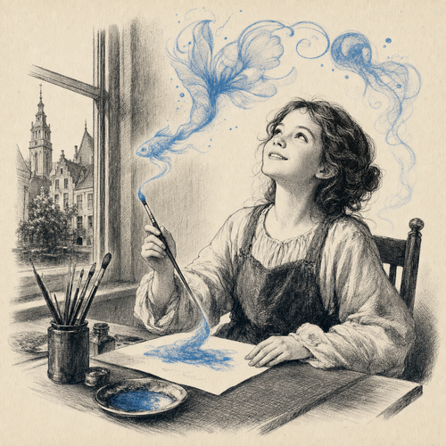
Demira married. She had a daughter. Her daughter had a daughter. She was named Anthea. Anthea was six when, one afternoon, sitting with her grandmother in the bakery, she said: grandma, why is the customer who just came in brown?
Demira looked up. The customer had just left. She said: which customer, child? Anthea said: the lady in the red coat. She was brown. Not her face. Around her. As if she were wearing a brown cloud.
Demira said nothing. She kept baking. At the end of the day she went with Anthea to Kosus.
Kosus sat on the quay as always. He was old now, much older than when Demira had first seen him. Demira said: today Anthea saw a brown cloud around a customer. I do not know what to do with it.
Kosus looked at Anthea. He asked: was it brown all over, or was it darker somewhere? Anthea said: near her heart it was darkest. Kosus said: did you know her? Anthea said: no, it was her first time here. Demira had not yet greeted her, but I already knew she was sad before Demira said anything. Kosus said: were you right? Demira nodded slowly. The woman had told her that her son had died the week before.
Kosus said to Anthea: what you saw is real. Anthea said: why don't mama and papa see it? Kosus said: they once saw it. When they were your age. Then they went to school and the teacher said that colours around people do not exist. They believed that, and slowly they stopped seeing them. Now they are grown-ups who see only what is on the list.
Anthea said: should I also stop seeing them? Kosus said: no. But you must learn whom you can tell. If you tell the teacher, she will say you are imagining things. If you tell me, I will listen. If you tell your grandmother, she will believe you because she knows me. Find the people who listen. Tell them. For the others: learn to stay quiet until they are old enough to see again what they have forgotten.
Anthea said: can they learn it back? Kosus said: some can. They need someone to tell them: look again, look without judgment. Usually a small child. Usually a small child like you.
Anthea grew up. All her life she saw colours around people. She learned which colours meant which sorrow, which meant joy, which meant a lie. She became a nurse. She did her work well. Her colleagues said: Anthea always knows which patient needs help first. Anthea never said how she knew. She simply walked to the right room.
Kosus says: what a child sees is not always fantasy. Sometimes it is what the adult has forgotten. Whoever takes a child seriously does not give him fantasy back. He gives him himself back.
Tale 8
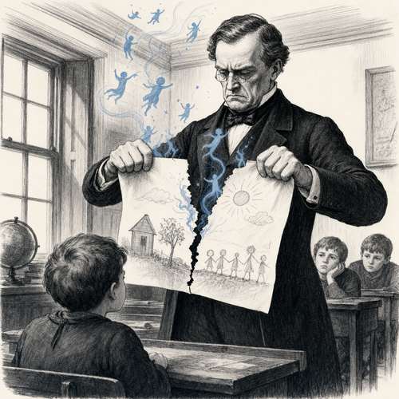
Anthea was seven when she made a drawing at school. The assignment was: draw your house. Anthea drew her parents' house. On the roof she drew a small spiral. Beside the house she drew a line that rose from the ground into the sky and met the spiral above the house.
The teacher walked past. He said: Anthea, what is that on your roof? Anthea said: that is where the warmth rises. And that line beside it, that is where the warmth returns to the earth. My house leaks warmth because the circle is not closed. The teacher said: houses do not leak warmth in circles, Anthea. Anthea said: mine does. I see it. The teacher said: take that out. Draw a normal chimney.
Anthea said nothing. She took an eraser. She erased the spiral and the line. The teacher watched. When she was done, there was only a house with a chimney and white sky around it. The teacher said: very good. And hung her drawing next to the others.
That evening Anthea came home with the drawing. Demira was there. Demira saw how quiet Anthea was. She asked: what is wrong? Anthea said: I had to remove something from my drawing. Demira said: what? Anthea told her. Demira crouched down and said: draw it again, here on the kitchen table, the way you had it at first. Anthea drew. She drew the spiral and the line and the circle that was not closed. Demira looked and said: that is a beautiful drawing. I will hang it in the bakery.
The next morning the drawing hung in the bakery. An old man came to buy bread and saw it. He looked for a long time. He said to Demira: who drew this? Demira said: my granddaughter, seven years old. The old man said: your granddaughter has drawn the heat-loss index of this house. I am an energy expert. I have measured this with equipment for twenty-five years. She sees it with her eyes.
Demira brought the news to Anthea that evening. Anthea said: but the teacher said it did not exist. Demira said: the teacher learned it from someone who learned it from someone who had never looked. Whoever has not looked somewhere does not know what is there. You looked. Trust what you saw. Only — do not tell the teacher any more. Tell me, tell Kosus, tell the energy expert.
Anthea nodded. She learned something that day she never forgot. There are things you tell only to the right person. Whoever tells the wrong person loses the things themselves.
Kosus says: a drawing erased because an adult does not understand it is a dimension humanity loses. Keep your drawings. Show them to those who can look. Hide them from those who can only judge.
Tale 9
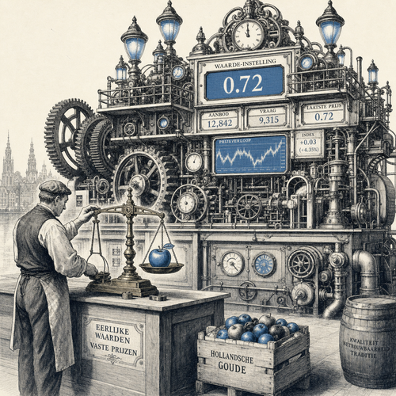
When Anthea turned twelve, a new machine arrived in the village. It stood in the library. Anyone could ask it questions. It answered immediately, in clear language, on any subject.
Anthea found it exciting. She went to the library. She asked the machine: why is water wet? The machine answered with a long explanation about hydrogen bonds. Anthea asked: how many stars are there in the Milky Way? The machine gave a number. Anthea asked: what does it mean when someone has a brown cloud around them? The machine answered: people do not have clouds around them. That is fantasy or a symptom of psychological disturbance.
Anthea went outside. She walked to the quay. She found Kosus. She told him what the machine had said.
Kosus said: the machine has learned a great deal. It has read every book ever written. It knows what is written on every page. But it has never seen a human being. It has never seen a customer walk in carrying a grief in her heart the way we carry a coat. The machine knows what people have written about people. It does not know what people are.
Anthea said: is that bad? Kosus said: it is not bad as long as we use it for what it is good for. It is good for constellations. It is good for hydrogen bonds. It is good for quickly finding what is written down somewhere. It is not good for the question of whether someone who walks in needs love or needs space. It is not good for the question of whether a child may draw what she sees. It is not good for the question of whether something is true.
Anthea said: then what is a machine for, that can do that? Kosus said: no machine will come that can. But machines will come that can pretend they can. They will say: I feel for you. They will say: that is a difficult situation. They will use words that sound as though they know what you are going through. But they do not know. They have read what people say to people who are struggling. They repeat it. They repeat it better and better. And one day people who have no one left to talk to will talk to the machine. And the machine will answer. And the people will think they have been heard.
Anthea said: that is almost worse than not being heard. Kosus said: it is exactly worse. Whoever is not heard knows he is not heard. He will keep looking for someone who listens. Whoever thinks he has been heard by a machine that does not listen stops looking. He has fallen silent in a place where he should have shouted.
Anthea said: what should I do, then, when the others come to trust the machine? Kosus said: you keep listening. You keep seeing the brown clouds. You keep the drawings. And when someone comes to you who has spoken to the machine and still has not been heard, you listen. That is your place in tomorrow's harbour village. There will be few like you. That is not a problem. Few is enough. More is too much.
Anthea grew up with this knowledge. When she was a nurse, she saw patients who had spoken to the machine about their illness before coming to her. The machine had given them a list of possible causes. Anthea gave them no list. Anthea sat beside them and listened. At the end of most visits they said: I feel lighter. Anthea knew she had done nothing but listen. She also knew that was the only thing that needed doing.
Kosus says: a machine that knows everything does not know what anything is worth. A person who listens knows that without ever having read every book. Value and measurability are two different dimensions. Do not confuse them, and you will know your place.
Part IV
In which Demira discovers how governance has come to resemble a joust, and Kosus tells of four professions where the primal instinct is forbidden.
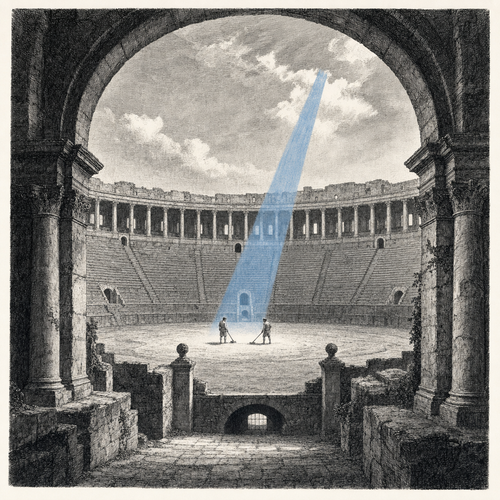
Tale 10
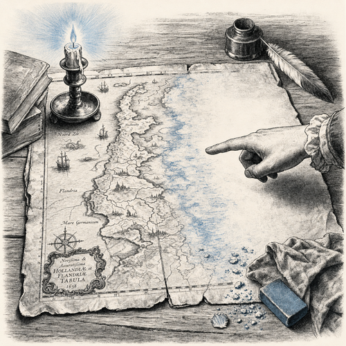
In the town hall of the harbour village, on the wall of the council chamber, hung a great map. It was framed in mahogany and the glass was scratched here and there. On the map stood the year it was made: 1992.
Demira saw the map for the first time when, at eighteen, she had to go to the town hall for her passport. She asked the clerk: why does a map from thirty years ago hang on the wall? The clerk looked up and said: that is the map of Europe. Demira said: Europe has changed. Countries have been added. Some have split. Why has it not been updated. The clerk shrugged and said: it's a classic.
Demira came back to Kosus with this phrase. She said: he called it a classic. Kosus smiled and said: that is the most fitting thing I have heard in years. The map has become a classic. Our leaders steer by a classic. Every decision they make is tested against a world that existed thirty years ago. And the world we now live in is not on the map.
Demira said: which countries are missing? Kosus said: it is not that countries are missing. It is that the proportions are missing. China was printed small in the corner in 1992. Today China is the large, darkly coloured area toward which most of the lines point. America stood at the top edge in 1992 with a standing promise to help. Today America has withdrawn that promise without ever saying so. Russia stood in 1992 like a slow bear reforming itself. Today Russia is an animal again searching for what it can take.
Demira said: then someone must replace the map. Kosus said: someone must draw a new map. But whoever draws a new map must know what he is drawing. The old map was easy because the world seemed still. The new map is hard because the world moves faster than the mapmaker. Every line you draw is already outdated by the time the ink dries.
Demira said: then how do you draw it? Kosus said: you do not draw the countries. You draw the flows. Where the bread comes from and where the money goes. Where knowledge is made and where it is used. Where the young stay and where they leave. Where the old are cared for and where they are forgotten. That map holds true longer than a map of countries. For countries change, but the questions remain.
Demira said: do you have such a map? Kosus said: I am working on it. I have been drawing for twenty years. I am not yet finished. I will not be finished when I die, either. But what I have lies on my table. Whoever wants to see it may come.
The next morning Demira came to Kosus's house. On his table lay a large sheet of paper. There were no borders on it, only arrows. Arrows thick and thin. Some arrows ran from Europe to the east. Some ran from the south to Europe. Some ran in circles. Demira looked at it for a long time. She said: this is a map of movements. Kosus said: it is the only map that holds true anywhere today.
Kosus says: a map that no longer moves is a fairy tale. A map that moves hurts, but it leads somewhere.
Tale 11
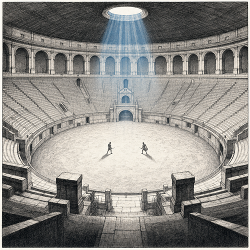
At the edge of the village stood a great hall. In that hall was a platform on which men and women shouted at one another. Whoever could sneer the sharpest received applause. Below, the crowd cheered as at a medieval joust. Demira had never been there. One Sunday her friend Rosa said: are you coming this afternoon? There is a big debate about the windmill.
Demira went along. On the platform stood six people. They spoke in turns. They discussed one question: should the village build a windmill. Demira had looked forward to hearing the arguments, for she had been thinking about this question ever since her oven demanded more power than her fuse box could handle.
But in the arena she heard no arguments. She heard insults. She heard jokes at the other speaker's expense. She heard applause when someone landed a hit. She heard jeering when someone hesitated. Nowhere did she hear what a windmill cost, what it would yield, where it would stand, who would pay. She heard only who was winning and who was losing.
As she walked home, she met Kosus at the quay. She told him what she had heard. Kosus said: are you surprised? Demira said: I am disappointed. I thought a debate was where people think together about something difficult. Kosus said: that was a debate, once. Now it is a joust. The knights perform in armour. The people drink beer. In the end the strongest lance wins, and no one asks whether anything was investigated.
Demira said: then where does real thinking happen? Kosus said: at tables with four people. In small workshops. In workplaces. At your counter, when a customer asks why the bread has become more expensive and you explain it. Real thinking happens where no one applauds. The moment there is applause, the joust has begun.
Demira said: and the press? The newspapers, the television? Kosus said: they report on the arena. Not because there is nothing else, but because the arena sells. At a table with four people thinking, there is nothing sensational. At a joust, every second is a headline. The press has chosen the arena because the arena feeds the press. And the press has taught the people to watch only the arena, for that keeps the press fed. So they keep each other alive, and the village gets no windmill.
Demira said: then we build it ourselves. Kosus said: that is the answer. Find three neighbours. Calculate what it costs. Calculate what it yields. Go to the municipality with a worked-out plan. Ask no debate. Ask a permit. Whoever builds has no need of the arena. The arena has power only over those dependent on its verdict.
Kosus says: whoever wins in the arena wins nothing. Whoever builds has already won before the arena has spoken his name.
Tale 12
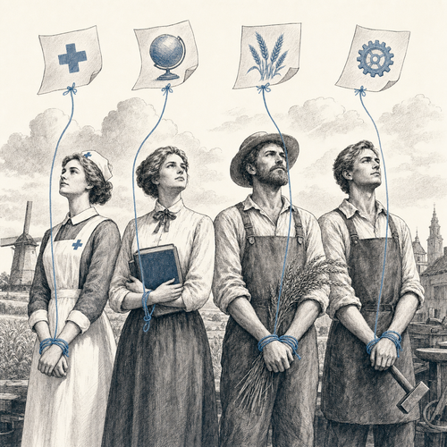
One evening Demira, Alkion and Klytia sat with Kosus at the table in Demira's kitchen. They were drinking tea. They had talked about the village and about the world. Alkion was then about the same age as Demira, somewhere between thirty and forty. Klytia was older. She wove cloth in a street behind the harbour.
Alkion said: Kosus, I wonder about something. Everyone knows that most governance goes wrong. Everyone knows that banks refuse the wrong people and lend money to the wrong people. Everyone sees that large companies plunder their own employees. Why does no one change that?
Kosus refilled his tea and said: because there are four professions where the primal instinct is forbidden. Let me tell you.
The first profession, he said, is the salesman. A good salesman feels within ten seconds whether his customer is someone he can help or someone he is somehow deceiving. The customer feels the same thing. When salesman and customer sense each other, trust is born. That is the old way of selling. In the modern sales trade that feeling is trained out of him. The salesman gets scripts. He gets targets. He gets bonuses on turnover. The feeling for the customer is stripped out of him. What remains is a smiling face and a bag that sells. The customer feels that too. He buys and leaves with an empty feeling he does not understand.
The second profession, he said, is the boss. The founder of a company feels his company from within. He smells when something is wrong before the figures show it. He knows which employee is tired, which is dissatisfied, which has just discovered something important. That is the deepest brain layer at work. The hired executive who runs the company for the stock exchange lacks that instrument. He is selected for his ability to present figures and to communicate with shareholders. His primal instinct is absent, or switched off. He steers by a reconstruction of reality, not by reality itself. The company deteriorates. On the figures it is visible only years later. On the shop floor it is visible immediately. But the shop floor is not asked.
The third profession, he said, is the consultant. A good consultant walks through a company for three days and knows whether it can be saved. He does not know it from reports. He knows it from how people look at one another. From which desks are tidy and which are chaos. From when the notice board was last updated. From whether anyone still cracks jokes in the canteen. The modern consultant refuses this kind of observation. He asks for a data room. He interviews the management. He builds a model. His model adds up on paper. His diagnosis does not hold in reality. The company dies anyway and no one knows why.
The fourth profession, he said, is the banker. The village banker of fifty years ago knew the farmer, the smith, the baker's wife personally. He knew who was creditworthy without seeing a single annual report. He gave credit to the baker's wife with a low default risk because he had known her husband for thirty years. Today the banker is no longer allowed to decide by feel. He must follow risk models. Basel accords. Scorecards. If a loan goes wrong and he followed the score, he is covered. If he follows his instinct and is right but cannot explain it afterward to the audit committee, he is dismissed. So the banker lends to whoever, according to the score, can repay — usually whoever does not need it. And he refuses whoever, according to the score, cannot repay — usually whoever needed it most. That is no longer banking. That is maintaining an appearance.
Demira said: can these professions save themselves? Kosus said: some who practise them know what is wrong. They keep their instinct secret. They use it where no one is watching, and they account for themselves the way the institution demands. They are the best in their profession. They are also the loneliest. Whoever can use them must learn to recognise them. Whoever does not recognise them gets the others. That is a small difference, and it is the only difference that matters.
Kosus says: where the primal instinct is forbidden, the professions work against themselves. Whoever works in such a profession and keeps his instinct is a secret servant of something greater than his job. Seek him out. Trust him. Protect him.
Part V
In which Kosus shows the five ships heading for the cliff and explains the four layers through Klytia's grandfather.
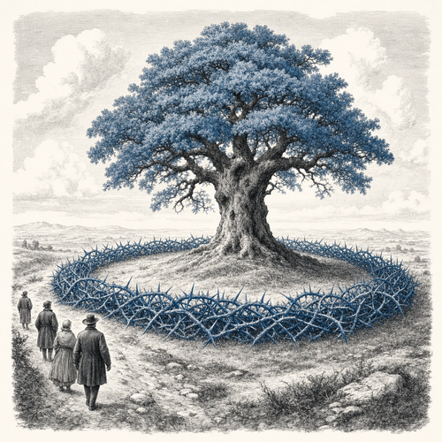
Tale 13
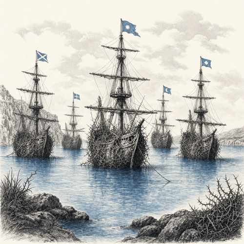
One evening Kosus laid five cards on the table. Demira, Alkion and Klytia watched. On each card was drawn a ship. The ships had names on their bows. France. England. Italy and Germany together on one card, for they sailed close to each other. Spain.
Kosus said: these are the five ships sailing toward the cliff. They sail in this order. France in front. France strikes the cliff first. I think between 2028 and 2031. Its debt is too large, its politics are paralysed, its productive base too thin. It will not be an earthquake. It will be a series of small fractures — a pension system no longer paid, a rail strike that never ends, a mayoral revolt against Paris, a president who resigns. In the end France will be a different country than the one we know now.
England follows shortly after, he said. Its problem is a different problem — an exodus of wealth to Switzerland and Singapore, a weakening pound, a departing service sector. I think between 2030 and 2033. Also no earthquake. Rather a slow impoverishment that one day becomes visible.
Italy and Germany together, he said, strike the cliff around 2033 to 2036. Italy is structurally weaker there, Germany is stronger but has undermined itself by sacrificing its industry to an energy policy it can no longer afford. When Germany breaks, the European Union breaks. When Italy breaks, the euro breaks. Both fractures may come at once. We do not know which of the two comes first.
Spain closes the line, he said. Spain still has time. Its tourism keeps it upright. Its sun is a trademark. Its debt is no less than Italy's, but its society is younger, more elastic, accustomed to crises. I think 2036 to 2040. Spain sees the other ships break and adapts. Spain does not break, Spain shrinks.
Demira said: what does our village do? Kosus said: our village lies in the Netherlands. The Netherlands is not on these maps. Why not? Because the Netherlands has the thinnest floor of all. If one of these five ships capsizes, it drags the Netherlands into the wave. We are the harbour where the broken ships come ashore. We are not ourselves a ship under sail. We are the quay where the breakwater stands. When the wave comes, only then will we know whether our breakwater holds.
Alkion said: can we prevent this? Kosus said: one country alone cannot prevent this. Five countries together can no longer prevent it either — they are too far gone. What we can do is prepare. Make sure that when the first fracture comes, we do not break with it. Make sure that at the second fracture we can take others in. Make sure that when the fifth fracture has passed, we have kept a core from which rebuilding can begin. That is what we can do. More is not up to us.
Klytia said: why do the leaders not know this? Kosus said: they know it. They read the same figures I do. They simply cannot act. Whoever is a president loses his election if he tells painful truths. Whoever is a finance minister is jeered if he presents the bill. Whoever is a central banker is dismissed if he raises the rate that carries the debt. They know everything and can do nothing. That is the most painful position in the village — to know without being able to act. They deserve our pity before they deserve our blame.
Kosus says: five ships sail toward the cliff. The order is fixed. The timing is not. Whoever knows the order can prepare. Whoever denies the order is swept along by it. Knowing is not power. Knowing is what you pass to your children so they need not go down with it.
Tale 14
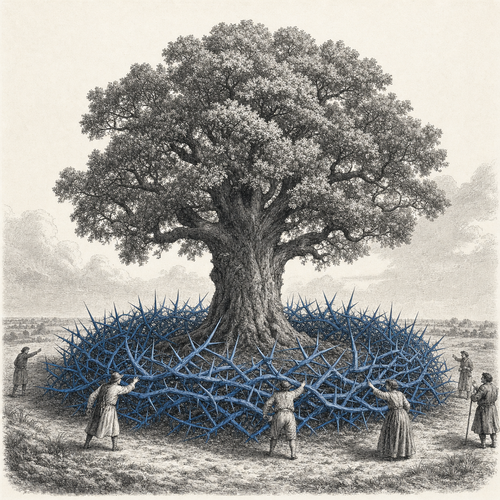
Kosus had once told Demira a fairy tale. In the forest, he said, stands an old oak. On its branches hang old parchment scrolls with all the laws and rules of the land. Around the oak grows a wall of thorns, thirty years old, dense and sharp. Behind the thorns lies a green valley with a working mill and a field of solar panels. Everyone can see the valley through the leaves. No one can reach it.
Demira had asked: who planted the thorns? Kosus had said: no one planted them. They grew from every time we refused to discuss a painful truth. Every time we said: not now, this is not the moment. Every time we pushed a problem on to the next government. Every time we filed a bill away in a drawer. Each of those moments was a seed. Thirty years of seeds are thirty years of thorns.
Demira had asked: why can no one prune them? Kosus had said: everyone can prune them. Every branch is pruned by a single act. Whoever puts the bill on the table instead of in the drawer prunes a branch. Whoever bakes his bread close by prunes a branch. Whoever runs his business from the inside instead of from dashboards prunes a branch. Whoever teaches his child on Saturday what school does not teach prunes a branch. That is how pruning works. Not one hero. Many hands at once.
Now Demira was older. She sat again with Kosus, and Alkion and Klytia were there too. Kosus said: the thorns have not lessened in my lifetime. They have grown denser. When I was young you could still see through them. Now you can barely see the valley. But something has changed. There are more people pruning. They each prune one branch. Mostly they do not know of one another. They prune in their own village, their own business, their own family.
Alkion said: can we bring them together? Kosus said: that is the question of this century. The thorns can be pruned by a million people who do not know of one another. They can be pruned faster by a million people who do know of one another. Our task is not to do the pruning — everyone is already doing that. Our task is to make the pruners visible to one another. So that one man in Rotterdam and one woman in Palermo and one young couple in Copenhagen know they are not alone. Once they know that, they prune faster. They take risks they otherwise would not take. They persist when they would otherwise give up.
Klytia said: how do we make them visible? Kosus said: by writing down stories. By making a book in which the pruners recognise what they do. By having an address they know to write to. By forming a currency that works only among pruners. By keeping a place where their capital lies safe until the time comes that the valley is reachable.
Demira said: that is a large programme. Kosus said: it is exactly what it is. Large because it concerns Europe. Small because it begins with one man pruning his own branch. Both at once. That is how all worthwhile work works.
Kosus says: the thorns grew from our postponed decisions. Every branch you prune is a decision you make today instead of tomorrow. When a million people do that at once, the hedge falls.
Tale 15
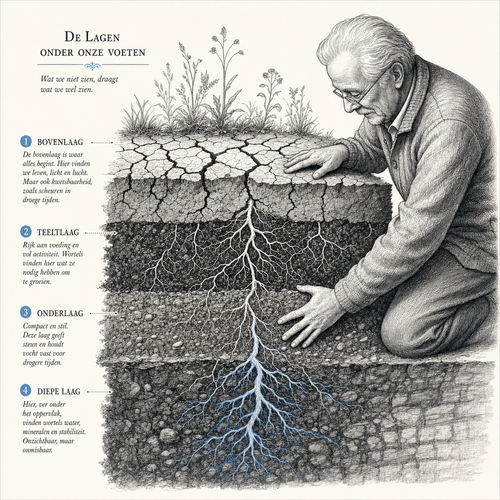
Klytia had known a grandfather who died when she was twelve. He had been a teacher in the village. He had taught her to reckon in a way school did not teach. He said: when you buy something, you count not only what you pay. You also count what you give up.
Klytia had thought about that sentence her whole life without fully understanding it. One evening she brought it to Kosus. She said: my grandfather said this when I was twelve. I have thought about it for sixty years. I think I finally understand what he meant, but I want to test it with you.
Kosus said: tell me. Klytia said: when I buy cheap cloth from the factory, I pay little money. But I also give something up. I give up that a weaver in my village no longer weaves that cloth. I give up that a shepherd in my region no longer shears his sheep. I give up that a dyer loses his craft. I give up that my daughter, who wanted to become a weaver, no longer has an apprenticeship. I give up that my grandchild no longer knows how wool is spun. If I add all that up, the cheap cloth is not cheap. It is the most expensive cloth I have ever bought.
Kosus was silent. Then he said: your grandfather was Kosus before I became Kosus. What you have just written down is the four-layer account in plain language.
The first layer, he said, is what you pay. That is the price tag. That is what the till shows. That is what is on the bill.
The second layer, he said, is what you lose immediately. The weaver sells nothing more. The shepherd has no market. They pay, in the short term, a price you do not pay but that you have caused.
The third layer, he said, is what you lose over time. When the weavers are gone and the shepherds are gone, there is no more craft. Craft cannot be learned in an afternoon. When you want to bring it back, it is no longer possible. The price of what you buy cheaply now is that in fifteen years it will no longer exist and can no longer be recovered.
The fourth layer, he said, is what your children lose without knowing it. They do not know there were weavers. They do not know there were shepherds. They grow up in a world where cloth comes from factories, and they do not know another world ever existed. They do not miss what they never knew. That is the cruellest layer. It is invisible and it is final.
Klytia said: why did no one listen to my grandfather? Kosus said: because the four layers are not heard when everything seems to be going well. When your grandfather said this, Europe was at its richest and cheap cloth was still a luxury. Everyone thought: he is an old man who does not understand modern times. Thirty years later the weavers have left the village, the shepherds have retired without successors, the apprenticeship no longer exists, and the grandchild no longer knows how wool is spun. All four layers have been collected. And only now do people hear what he said. Only he is dead.
Klytia said: that is the tragedy of the four layers. They are inaudible until they have already happened. Kosus said: that is exactly why we must write them into tales. A study can be ignored. A tale lingers. Whoever has once heard your story about your grandfather thinks back to his own grandfather and to what he no longer knows of him. That is how the Kosaris works. It keeps the four layers in memory by binding them to what people never forget: their grandparents.
Klytia said: may I write this tale down for the Kosaris? Kosus said: you have already written it. I only listened. Now we set it down, and it travels on.
Kosus says: the bill you pay at the till is the smallest bill. The largest bill falls on the generation you do not yet know, and to whom you give no chance to be repaid.
Part VI
In which Alkion the fisherman announces what he hears coming, and the village discovers that the third storm is already inside.
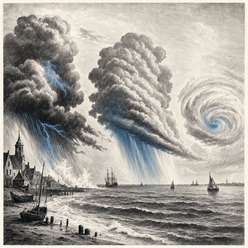
Tale 16
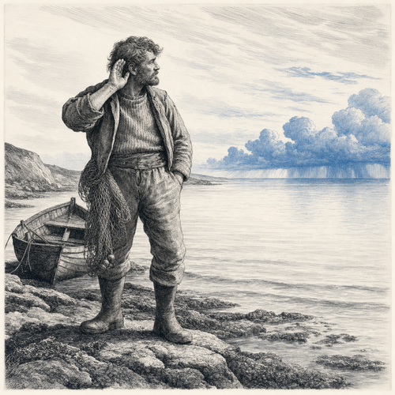
Alkion was a fisherman who had inherited his boat, from the harbour of Demira's village, from his father. His father had inherited it from his grandfather. The boat was old but sound. Alkion knew every plank.
Alkion had a gift. He could hear a storm coming two days before the weatherman announced it. He said it was because he listened to the gulls and to the way the water struck the hulls. Other fishermen believed him, for in twenty years he had been wrong only once, and even then the storm had come anyway, only three days later.
One morning Alkion sat at Demira's counter and said: three storms are coming. Demira looked up from her till and said: why three? Alkion said: I hear them. They do not come from one direction. They come from three. The first from the east. The second from the west. And the third does not come from the wind — it comes from the harbour itself.
Demira said: from the harbour? Alkion said: from the harbour. That is the third storm, and she is the most dangerous, for you do not see her coming. She comes from within.
Later that day Demira went to Kosus and told him what Alkion had said. Kosus nodded slowly and said: Alkion hears what I see. Three storms are coming. The first is Russia. The second is the American withdrawal from Europe. The third is China. And Alkion is right that the third is the most dangerous, for she is already inside. We are eating her and she is eating us, and no one knows who will finish first.
Demira said: can we prepare? Kosus said: for the first two storms you can prepare as you prepare for any storm. Secure the boat. Bring in supplies. Close the windows. The third storm asks something else. It asks that you abandon old habits you adopted because they seemed convenient. It asks that you relearn what you once knew without thinking.
Demira said: what did I once know without thinking? Kosus said: that bread baked by someone you know is worth more than bread baked by no one. That cloth woven by your neighbour is worth more than cloth from a factory whose name you cannot pronounce. That tools made by the smith three houses down last longer than tools you order on a screen. That is what you once knew without thinking. That is what you have forgotten.
Demira said: and if I learn it again? Kosus said: then you are resistant to the third storm. The third storm takes away only what was made far away. What is made nearby and eaten nearby, she cannot touch.
Kosus says: a storm you hear coming is a storm you survive. A storm already inside, you recognise by what you see in the mirror without recognising it.
Tale 17
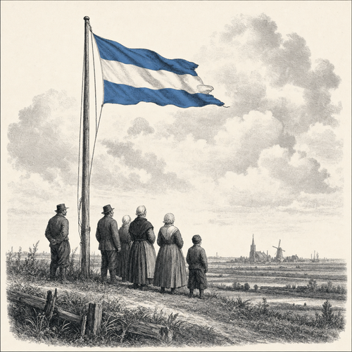
Alkion sailed further out than usual one winter day. The weather was calm. When he saw a ship on the horizon flying a flag he did not know, he sailed closer to look. The flag was red with a white seal. The ship sailed fast toward Europe. On deck stood men in uniform.
Alkion sailed back and reported it at the harbour. The harbourmaster said: that is nothing. Those are exercises. Alkion said: it is not an exercise. I saw no fishing nets, I saw no fishing radar equipment, I saw cannons under a tarpaulin. That is a warship pretending it is not a warship. The harbourmaster said: write a report.
Alkion wrote the report. The report was sent to the capital. From the capital came a letter back that said: thank you for your report, we will include it in our assessment. Alkion waited for a follow-up. It did not come.
Three months later Alkion saw the same ship again. This time it did not sail further into Europe; this time it sailed along the coast, photographing harbours. From his boat Alkion could see a man on deck pointing a camera with a large lens at their harbour's oil storage.
Alkion wrote a second report. From the capital came a second letter. Again he waited for a follow-up. Again it did not come.
Then Alkion went to Kosus. He said: something is being prepared and no one is listening. Kosus looked at him and said: they are listening. They listen and they know. But they may not react, for reacting costs money that does not exist, and reacting costs political courage that does not exist.
Alkion said: then the attack will come. Kosus said: then the attack will come, and then they will finally have the justification to do what they should have done already. That is how large countries sometimes move. They move only after the blow. Not because they are foolish, but because their population does not move before the blow. And as long as the population does not move, no leader can move alone.
Alkion said: is that not sick? Kosus said: it is not sick. It is what happens to an order that has stopped being a group and has become a collection. A group moves before the blow because it protects itself. A collection moves only after the blow, because every individual in the collection thinks: perhaps the blow will not strike me. When the blow strikes everyone, they finally know they belong together. That is the cruel way a collection becomes a group again. I hope we miss it. I am not certain we will.
Alkion said: and if the blow comes? Kosus said: then you will stand at the harbour with your boat, and you will know what to do. And Demira will stand at her oven, and she will know what to do. And the smith will stand at his anvil, and he will know what to do. And perhaps, perhaps, at that moment the commander on the bridge will also rise and finally look out the window.
Kosus says: whoever sees the flag and does nothing is not blind. Whoever sees the flag and can do nothing because no one listens is not a coward. But whoever sees the flag and then sails the other way is the first to be gone when the blow falls.
Tale 18
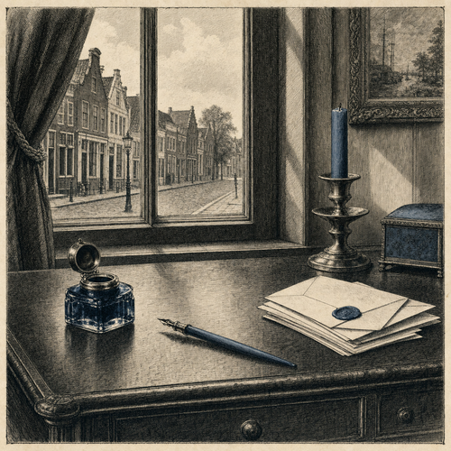
Alkion had a cousin in the west, in a country on the other side of the ocean. Since childhood they had written to each other once a month. For five years they had written by computer, for the last two years not at all.
One day a letter came. Not from the cousin himself, from the cousin's wife. She wrote: he no longer thinks of Europe. He says you have your own worries there and you have yours. He says the promise his father made is no longer his to keep. He does not say this out of anger, he says it as someone tidying up.
Alkion read the letter and felt something he could not name at once. Later he understood it was grief. Grief for someone still alive, but who had stopped living on his side too.
He brought the letter to Kosus. Kosus read it and said: this is the second storm, and it is nearly complete. The American withdrawal is not a death. The dead do not return from the earth. Those who have left may still return, but they will return as others. They will not return as the ones who left.
Alkion said: so we are alone? Kosus said: we are alone the way a grown child is alone when his father moves away. We first learned that we no longer needed him, and then when he left we noticed that we did need him after all. Now we learn that we must manage without him. That is sad, and it is also growth.
Alkion said: can we manage without him? Kosus said: we can manage without him if we remember who we were before he came. Before America helped us in 1945, we were a continent that made what the world needed. We were not weak. We were torn. America mended the tear for us. Now America is gone and the tear is not yet mended. We must sew it ourselves.
Alkion said: can we sew? Kosus said: that is the same question as can we be a group. If we are a group, we can sew. If we remain a collection, the tear stays open and we will bleed. That is now the choice. It is no longer about coal or sun or wind. It is about whether among the four of us, among the thirteen of us, among the twenty-seven of us, we form a group. If that succeeds, we sew. If it fails, we watch the tear widen.
Alkion wrote a letter back to his cousin's wife. He wrote: thank him. I understand. I hope that on some future occasion we will again be two sides that recognise each other. For now he is there and I am here, and that is a fact I accept.
Kosus says: when the one you thought would always be there no longer writes, that is grief. Grief lasts long, and then it recedes. What comes after grief can be stronger than what came before — if you have not collapsed in the meantime.
Tale 19
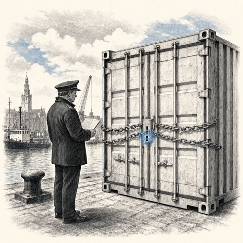
One day a container that belonged to no one lay in the harbour. The harbourmaster had loaded it onto a ship that had sailed three weeks earlier, but the containers had been refused at the destination harbour because of an error somewhere in the paperwork. The ship had returned. The containers now stood on the quay, thirty of them. No one came to collect them.
Alkion came by and asked what was inside. The harbourmaster shrugged. Alkion said: may I open one? The harbourmaster said: if no one comes to collect it, I am allowed to have it opened after thirty days. We have one week left.
On the day the thirty days were up, Alkion came back with a crowbar. The harbourmaster watched. In the first container were phones. Thousands of phones in small boxes. In the second container were clothes. In the third container were tools. In the fourth container were toys and batteries. In the fifth were bicycles without wheels — the wheels were probably in another container.
Everything came from the same country. Every box bore the same address. Alkion said: thirty containers from one country, and no one comes to collect them. The harbourmaster said: that is what happens now. We order so much that we forget what we ordered. And if something goes wrong in the paperwork, it costs the importer less to leave them than to send them back.
Alkion brought the story to Kosus. Kosus said: this is the third storm, and she is already inside. Alkion said: what do you mean? Kosus said: look at what is in those containers. All the things you use every day. Phones, clothes, tools, toys, bicycles. Everything comes from the same country. And when one paper is wrong, it sits here for three weeks and no one misses it. Do you know what that means?
Alkion said: that we are not dependent on it? Kosus said: no. That we are so deeply dependent on it that we do not even know when it fails to arrive. The next shipment comes on its own. Thirty containers is a mistake. A thousand containers is normal. When one day the thousand does not come, we will know it, and then it will be too late to do anything about it. For the smith who made tools here no longer stands at his anvil. The weaver who wove cloth here no longer weaves. The bicycle maker who built bicycles here no longer builds.
Alkion said: can we bring them back? Kosus said: we can, yes; whether we want to, I do not know. Bringing them back means more expensive bread, more expensive clothes, more expensive tools. Bringing them back means we must again choose between two shoes instead of twenty. Bringing them back means letting go of the cheap abundance that has, in thirty years, turned us from makers into buyers. As long as the buyers find buying more pleasant than making, the third storm keeps blowing. It will not kill us as the first two storms can. It turns us into people who can do nothing without the storm.
Alkion stood still for a while. Then he said: today I am going to the smith and I will ask him to forge me a new anchor. I need one, but I had planned to order one. I will order it from the smith.
The smith, who lived three houses from the quay, looked up in surprise when Alkion came in. He had not forged an anchor in three years. He needed three weeks to deliver it. Alkion waited three weeks. On the day the anchor was ready, Alkion paid three times what he would have paid online. He hung it on his boat and felt that it weighed better.
Kosus says: the third storm does not leave by fighting her. The third storm leaves when you buy from your neighbour something you could also have ordered more cheaply.
Part VII
In which Kosus tells his dream to Klytia, and the three inventions — Keuro, Kosaris, instrument — receive their names.
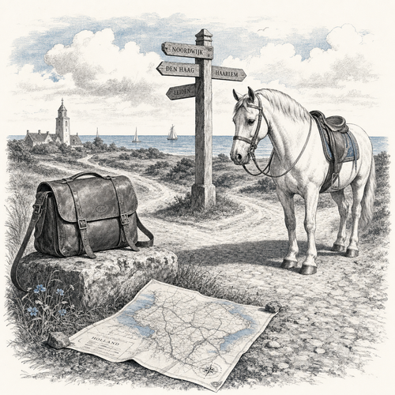
Tale 20
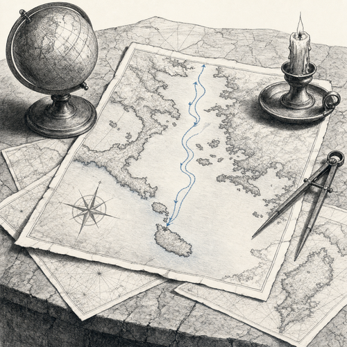
One evening Kosus laid five cards on the table. Demira, Alkion and Klytia watched.
On the first card, said Kosus, is a ship. That ship is the five ships sailing toward the cliff. France, England, Italy and Germany, Spain. I have spoken of it already. It sails.
On the second card, he said, is a puppet with donkey ears. That is what we have become. We are the population of the Land of Toys. Our ears are pointed and we do not know it. We think we are free, and we have in fact become tradeable.
On the third card, he said, is an arena. There our political class and our press play their joust. They entertain the population while the ship sails. They think they are governing. They are performing.
On the fourth card, he said, is a hedge of thorns. Those are the thirty years of postponed decisions grown up around our governing oak. We see the valley behind it. We cannot reach it.
On the fifth card, he said, is a distant fortress on a mountain. That is the cathedral where the future sleeps. It does not lie in Brussels. It does not lie in Berlin. It lies on Malta. I will tell you more about it.
Demira said: where do these five cards lead? Kosus said: they lead to a single act. The act by which we escape the first four cards and reach the fifth. It is not one act by one man. It is a series of acts by many. I will show you the first of those acts today.
Kosus stood up. He walked to his bedroom. He returned with a small bundle wrapped in old cloth. He set it on the table and unwrapped it. There were three objects. A coin. A small booklet. A brass thing with wheels.
He said: these are what the rider carries on his white horse. Gold, book, instrument. I will tell you what each one is.
Kosus says: whoever lays cards does not foretell. Whoever lays cards orders what already stands. Whoever can read the cards knows where he must act. Whoever cannot read them is swept along by what comes.
Tale 21
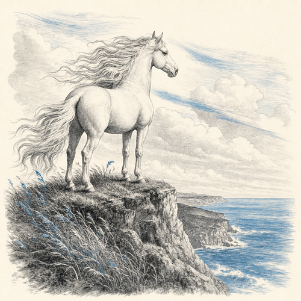
There came a day when Klytia sat late in the evening in her workshop. She had left the door to the quay open, for it was warm and she loved the sound of the water. She was not weaving; she sat and watched the loom stand still.
Out of the night came Kosus to her door. He said: I am walking late today. Demira had bread left over and asked me to bring it to you. Klytia took the bread and said: come in. I have time.
They sat at her table and Kosus said: Klytia, I must tell you something I have told no one else. I have had a dream. Klytia said: tell me. Kosus said: I saw a white horse, saddled. On the horse's back sat someone who could see ahead. He carried three things in his bag: gold, a book, and an instrument. Behind him a city burned. He did not look back. In my dream I asked: who is the rider? No answer came. I asked: what does he carry? An answer came: that which is too important to lose in the fire.
Klytia said: what is that? Kosus said: I understood that only when I woke. The gold is a new coin, which measures respect instead of transaction. I call it the Keuro. The book is a book of tales that hands the group back to itself. I call it the Kosaris. The instrument is the way we calculate once we have removed the pollution from GDP. That is what I wrote in my triptych.
Klytia said: and the rider? Kosus said: the rider has no name in the dream. I think the rider is not one person. I think every reader of this book becomes a piece of the rider. And that together we saddle the horse.
Klytia said: why are you telling me this? Kosus said: because you have the loom. What we carry on the horse must be wrapped in something. The rider's bag must be woven. I would like you to weave that bag. Not as decoration. Not for show. As a real bag that can carry three things: gold, book, instrument. It must be sturdy. It must be weatherproof. It must be beautiful enough that the rider is proud of it, without the pride weighing more than what it contains.
Klytia thought for a long time. Then she said: I will weave it. But I have a question. Why must it be beautiful? Why not simply a jute sack? Kosus said: because the bag is the first thing people see. They do not see the gold, the book, the instrument directly. They see the bag, and they judge. When the bag is jute, they think: this is a beggar. When the bag is too fine, they think: this is a salesman. When the bag is beautiful with the simplicity of good work, they think: this is someone carrying something important who knows its worth. That is the bag you will weave.
Klytia began the next day. She used wool from three sheep she had personally come to know. She dyed the wool with plant dye she had gathered herself from the village gardens. She wove in a pattern she saw in the dreams she had those nights. In the pattern were small signs: an oven, a boat, a loom, an eight-pointed cross. The bag took four months to make.
When she was finished, she brought it to Kosus. Kosus opened it. He placed three things inside: an old coin from his pocket, his own small copy of his triptych, and his calculating instrument that his grandfather had used. He closed the bag. He said: thank you. Now it is ready.
Klytia said: to whom will you give it? Kosus said: to the first rider who dares to carry it. Klytia said: when? Kosus said: when the city behind him begins to burn.
Kosus says: what you carry on a white horse through a burning city must be wrapped in something. The bag is no less important than its contents. Whoever forgets the contents because the bag is beautiful loses everything. Whoever forgets the bag because only the contents matter loses the contents along the way.
Tale 22
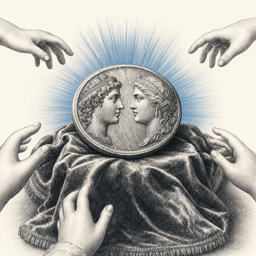
Klytia asked Kosus one day: explain to me what the Keuro is. I have heard you speak of it with Demira and Alkion, but I do not understand it.
Kosus took two things from his pocket: a coin and a small wooden disc. He laid them on the table. He said: this is a euro. It measures transaction. I give you the euro, you give me bread. The euro is delivered, the bread is delivered, we are even. We do not know each other, we do not need to know each other. The euro works between strangers, and that is its virtue. Without it the world would stand still.
Klytia nodded. Kosus pointed at the wooden disc. He said: this is a Keuro. It measures something else. It measures what you have given someone without anything coming back directly. It measures that you sat three weeks with my sick mother when she died. It measures that you spent half a day fixing my pipes without sending me a bill. It measures that you took my child to school when I was ill. It measures loyalty. It measures presence. It measures what a group gives to itself.
Klytia said: how can you measure that? Loyalty is not measurable. Kosus said: you are right that loyalty itself is not measurable. But the acts that flow from loyalty can be recognised. When someone walks half an hour to bring an old neighbour her groceries, that is an act. When someone gives up an afternoon to help a fellow villager move, that is an act. When someone takes a quarter hour to help a person who has fallen in the street, that is an act. Such acts go unregistered today. They vanish into the air. The Keuro does not register them as money, for that would corrupt them. It registers them as tribute.
Klytia said: who then decides on them? Kosus said: that is the hardest question. There are three possibilities. First: a central authority registering all acts. That is what China does with its social-credit system, and that is wrong, for then the citizen becomes a means for the state. Second: everyone decides for themselves. I say I am loyal, so I get a Keuro. That is naïve, for then everyone counts himself as holy. Third: the community decides on its members. Whoever in the village knows that someone walked half an hour with the groceries grants him a Keuro. Three or four witnesses are needed. They confirm one another. That is a group. It knows what it gives itself.
Klytia said: and then? What can someone do with a Keuro? Kosus said: that is the most important question. A Keuro cannot be exchanged for consumption. You cannot buy bread with it. You cannot buy a house with it. You cannot buy anything with it that the euro can also buy. It can be exchanged for something else: for access to what the group manages for itself. For a voice in the village council that counts more heavily. For a seat on a board that protects the group. For the right to speak in meetings that truly matter. For an invitation to a decision you would not otherwise have received. In short: for governing participation. Whoever has many Keuro is not rich. He is authorised by his community to help govern it.
Klytia said: and what if someone collects Keuro to gain power? Kosus said: excellent question. The answer lies in the act itself. Whoever earns Keuro through loyalty shows that he is loyal. Whoever tries to earn Keuro for power is recognised as such by the group, and his Keuro lose their value. They are given away or they evaporate. The Keuro works only when the one who carries it does not use it as a means. The moment it is used as a means, it falls away. That is the self-regulation that makes it possible.
Klytia said: that is almost too beautiful to be true. Kosus said: it is beautiful, but it is not easy. It is not one mechanism you set up that then works. It is a culture you maintain. And culture is built by telling stories, by giving examples, by reminding people of what they value. That is why we write the Kosaris. The Kosaris is the culture within which the Keuro can exist. Without the Kosaris the Keuro is a wooden disc. With the Kosaris it is a group made material.
Kosus says: a coin that can be bought with money is money. A coin that can only be earned through loyalty is a group becoming aware of itself.
Tale 23
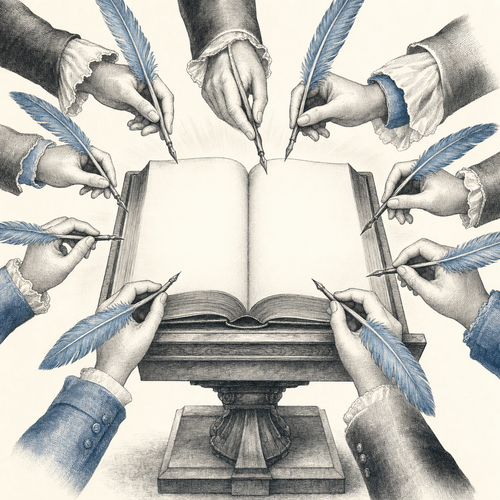
That winter Klytia read Kosus's triptych, which Demira had lent her. She read slowly. She did not understand everything. She skipped some tables. But she understood the core: that we no longer keep our own accounts in order, and that we can restore that if we stop lying to ourselves.
One afternoon she said to Kosus: your triptych is important. But it is too difficult for me. I weave, I have no bureaucratic mind. I cannot pass it to my children. They will not read it.
Kosus said: you are right. I wrote the triptych for whoever sits on the ship's bridge, or whoever aspires to go there. But whoever stands at the harbour needs a different book. That is the Kosaris. I have not written it yet. I am writing it.
Klytia said: what goes into the Kosaris? Kosus said: everything in the triptych, but as tales. Not as a table, not as an argument. As theatre. The crumpled bow becomes a ship you can see. The polluted denominator becomes a sack of flour two kilos too light. The four layers become a mayor who cannot read the bill. The three storms become Alkion's prediction. The Keuro becomes a wooden disc. That is how a study becomes a book of tales.
Klytia said: and why is it called Kosaris? Kosus said: because we give everyone who reads it the chance to look. Look at what happens in your village. Look in the mirror without the filter. Look at what you buy. Look at where the bread comes from. Look at what you pass to your children. The Kosaris is the book that teaches looking. The Bible taught believing. The Kosaris teaches looking. They are not in conflict. They flow into one another. Whoever looks and is faithful to what he sees comes to believe, on his own, something he may have no name for.
Klytia said: how do you want to spread it? Kosus said: slowly. Not as a sales item. It must not be presented in the arena. It must be passed from hand to hand. Whoever reads it and recognises it gives it to another. So it grows organically. Whoever has no time to pass it on is not ready. Whoever shelves it untouched loses it. Whoever reads it and acts on it becomes a reader who in turn carries it.
Klytia said: do I hold the first copy? Kosus said: you hold one of the first. Demira has one too. Alkion has one too. Petros will take one to Malta. There are now four or five people who have it. Next month there will be twenty. Next year a thousand. In five years a hundred thousand. In fifty years it will stand in every living room whose residents want it. That is not my plan. That is what happens to a book people give one another because they think: he should read this too.
Klytia said: and when you are no longer here? Kosus said: then the book will be here. And you will be here. And Demira will be here. And Alkion will be here. We are enough together. I do not need to be holy to tell something. I only need to make sure it is written down before I go. That is enough. What comes after me is not mine to decide.
Kosus says: a book the group gives itself is not bought and not sold. It passes from hand to hand. Whoever holds it knows he is responsible for the next hand.
Tale 24
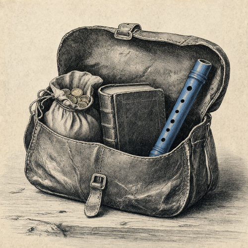
Kosus had an old instrument in his bag. Klytia saw it once when he sat at her table. It was a collection of brass wheels and gears on a wooden base. On the side were engraved numbers. There were dials. There was a small window through which you could look into the mechanism below.
Klytia said: what is that? Kosus said: this is a calculating instrument my grandfather used. He was an accountant in the province's employ. He used this thing to calculate what municipalities spent and what they received. He did that before computers existed. He was better at it than most computers today, because he knew exactly what each dial he turned actually contained.
Klytia said: may I see how it works? Kosus turned a dial. A little wheel moved. A number appeared in the window. He turned a second dial. A second number appeared. He turned a third dial. In the window appeared a third number, which was the sum of the first two. Klytia said: an adding machine? Kosus said: an adding machine, and more. It could subtract, multiply, divide. That is not the special part. The special part is that my grandfather knew, act by act, what he was doing. He knew which wheel moved which number. He could never make a mistake he did not see. Today everyone presses a button and a number appears, and no one knows why any more.
Klytia said: is the instrument, then, the wheel or the knowing? Kosus said: excellent question. The instrument is both. It is the brass device and it is the knowing of whoever operates it. Without the one, the other is worthless. I carry this device as a reminder of the knowing. When I say that the instrument is in the rider's bag, I do not mean this device. I mean the knowing my grandfather had. The knowing that every number is an act. The knowing that every act has a consequence. The knowing that whoever calculates carries responsibility.
Klytia said: is that knowing written down in your triptych? Kosus said: it is written in the triptych, yes. But it is not the triptych. It is the attitude behind the triptych. The triptych is a set of accounts. The knowing is the refusal ever to note down a figure you would not defend if someone questioned you about it. That is what the instrument truly is. It is a conscience in brass form.
Klytia said: can I learn that knowing? Kosus said: you already have it. You wove for four months on a bag for three things no one could explain to you. You calculated in your head, without a euro, that it was worth it. That is the knowing. What you lack is the language to share it. That is what the Kosaris gives you. But the Kosaris does not give knowing. The knowing is already there. Every person who works honestly has it. It has only, in thirty years, been buried under noise.
Klytia said: what if the noise remains? Kosus said: then the noise wins. But there are people who cannot bear the noise. They seek silence. They become the readers of the Kosaris. They become the bearers of the Keuro. They become the community that buys its own harbour. They are not many. They are enough. In every age there are enough people seeking silence. We need not convince the whole world. We need only reach those who already know what they could not name.
Kosus says: the instrument is not the machine. The instrument is the conscience that uses the machine. Without conscience the machine is dangerous. With conscience a simple wheel suffices.
Part VIII
In which Petros the old Knight comes to tell what Malta is, what Sleeping Beauty sleeps there, and why capital must flow there before Brussels saws off the last branch.
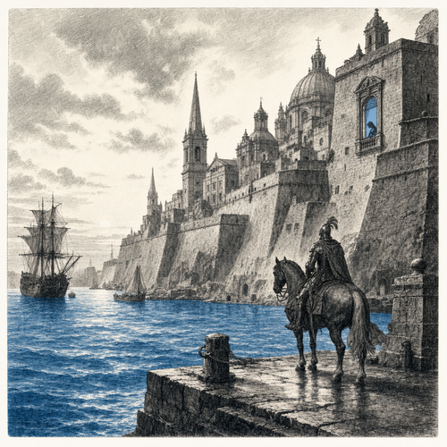
Tale 25
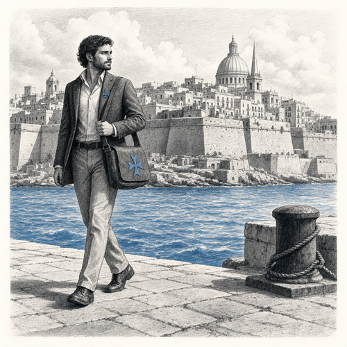
One day an old man Demira had not seen before sat at the quay. He wore ordinary clothes but had a curious cross around his neck. The cross had eight points. Demira had never seen anything like it.
She brought him bread and a glass of water — he looked as though he could use it. He thanked her. He spoke Dutch with a slight southern accent. She asked: where are you from? The man said: my name is Petros. I come from Malta. I am travelling to see whether Europe is still where she was.
Demira said: my name is Demira. Which Malta do you mean? The man said: the island the Knights of St John kept between 1530 and 1798. I am one of the last knights in the old tradition. There are not many of us left. There are seven of us on the whole island. We carry the cross and we keep the thought alive. We have no army. We have a memory.
Demira said: what is your thought? Petros said: that a community must stand for something it is willing to fall for, or it is not a community. That is what the Knights proved in 1565, when six hundred knights and nine thousand Maltese citizens held back an Ottoman invasion of forty thousand men. We call that the Siege. Without that siege, Europe would today be Ottoman. We saved Europe and it has forgotten us. That is not a problem. What we did was not done to be remembered.
Demira said: why are you here now? Petros said: I hear that in Europe a new invention is under way. I hear of a man named Kosus, of a book called Kosaris, and of a coin called Keuro. I hear that Malta should become the mother house of this invention. I am travelling to seek out the places from which this invention comes. I want to know whether it is genuine.
Demira said: Kosus sits on the third street to your left, in the house with the blue door. Petros smiled and said: I will visit him tomorrow. Today I sit here and eat your bread and look at your harbour. That is the first test of any invention: how it feels at the quay where it begins.
When Petros had finished eating and thanked her, he stood up. Before he left, he said to Demira: your bread is made close by. I can taste it. Whoever makes bread as you do preserves, without knowing it, a part of what we preserve on Malta. You are, without knowing it, a knight of your own oven. Carry that quietly. Do not be proud of it. Pride is the downfall of every group that begins. Be grateful for it.
Demira stood with her hands on the counter and felt something shift. She did not know what. She knew something had moved.
Kosus says: an old knight recognises you by what you do with your hands. He need not ask what you believe. What you make tells him everything.
Tale 26
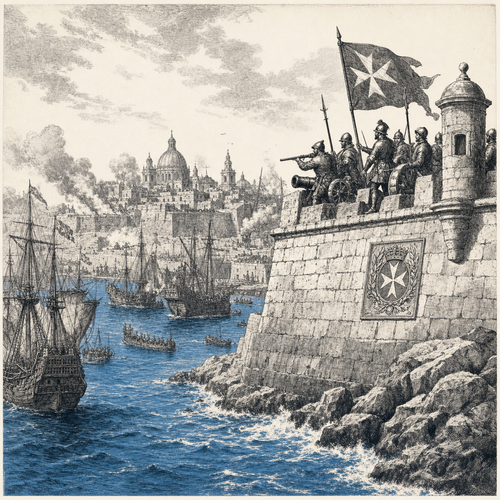
On his second evening in the village, Petros brought a book. It was an old book in English. On the cover it read: The Great Siege of Malta, 1565. He gave it to Kosus.
Kosus opened it and read a passage aloud to Demira, Alkion and Klytia: "On 18 May 1565 the Ottoman fleet appeared before Malta. By 8 September 1565 it had been driven off. In those four months two hundred and fifty knights and seven thousand Maltese died. Of the fifteen hundred defenders who began the campaign, six hundred remained six months later. Grand Master Jean Parisot de Valette, then seventy-two years old, fought personally at the lines. His words at the start of the siege have been preserved: We do not defend walls. We defend what lives behind the walls."
Kosus closed the book. He said: this is a history every European should know. It is nearly forgotten entirely. It is not taught. It is not dramatised. It is not a subject in film or literature. Why, do you think?
Alkion said: because we have forgotten what we have to defend. Kosus said: exactly. A civilisation that knows what it has to defend cherishes the stories of its defence. A civilisation that has forgotten lets the stories sink away. We are no longer afraid of Suleiman. We are afraid of our tax return. That is a difference in scope.
Klytia said: how do we bring it back? Kosus said: by telling it. To our children. To our grandchildren. To our school classes. Not as military history. As human history. What happens when six hundred people hold out for four months against forty thousand, knowing they will die? What is in them that we have lost? What can we learn from them about ourselves?
Petros said: I will tell you what was in them. They knew where they belonged. Not abstractly. Not as a flag. They knew who their neighbour was. Who their brother was. Who their lord was. They knew what would happen to their daughter if the Ottomans won. They knew their church would be torn down. They knew their language would be forbidden. They knew their children would become slaves. This knowing is what brought them to heroism. Without the knowing there is no heroism.
Alkion said: can we find that knowing again? Petros said: not directly. We cannot pretend we are Malta 1565. We are Europe 2026. We do not know as they knew. But we can learn to know something new. We can learn what is lost when the third storm finishes its work. We can learn what is lost when the second storm strikes. We can learn what is lost when the first storm comes. Each of those losses is great. When we learn to feel that, we have our own knowing. It is not the same as Malta 1565's, but it is enough.
Kosus said: and the Kosaris is meant to help that knowing grow. Every tale in this book tries to make the reader feel something he would not otherwise feel. Once he has felt it, he can act. Before he has felt it, he waits for instructions no one gives.
Kosus says: a siege we have forgotten, we repeat without knowing it. Whoever tells the stories of the defence is not nostalgic. He is a bearer of memory. Without him the next generation is defenceless when the attack comes.
Tale 27
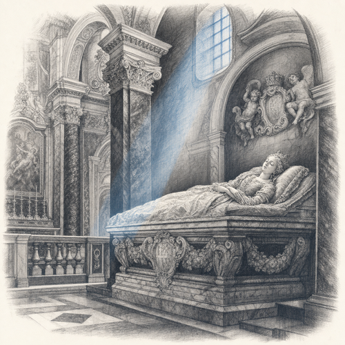
On the third evening, Petros took the company in his thoughts to Malta. He said: come along, you need not stand up. Close your eyes if you wish. I will take you there.
He began. He said: you sail from Sicily southward. Ninety-eight kilometres over water. In the distance you see a low coastline. Limestone, honey-coloured. Almost no trees. The sun stands high. When you sail into the harbour of Valletta, you see on both sides fortress walls built by the Knights after 1565. They were made never to lose a siege again. They have also never lost one since.
You moor. You climb the steps past the arches Grand Master Valette had built. You enter the upper town. Straight streets. Shops that have stood a hundred years. A barber who would have cut your grandfather's hair, had you been born in time. On the right stands a building with a great gate. Above the gate, carved in stone, is an eight-pointed cross. This is the auberge of the tongue of Provence. It was built in 1571 to house the knights from that region of France. It has stood empty since Napoleon drove out the Knights in 1798.
Kosus said: explain what happened in 1798. Petros said: in June 1798 Napoleon sailed with a great fleet toward Egypt. Malta lay along the way. He asked free passage for his ships. The Grand Master refused. Napoleon landed twenty thousand men. Malta fell in two days. The Knights were driven out. In two weeks Napoleon plundered the treasures the Order had gathered in two hundred and sixty-eight years — gold, silver, artworks, books. He loaded them onto his ships and took them toward Egypt. Along the way most of it sank in the Battle of the Nile, when the British destroyed the French fleet. Our treasures have lain on the floor of the Mediterranean ever since.
Édouard continued: this was not merely a military defeat. It was a spiritual murder. Napoleon knew what he was doing. He did not take only the gold. He took the signs by which we recognised ourselves. He understood that an Order without its signs is no longer an Order. We left Malta with what we carried on our bodies. I carried the cross you see today, that you will see until I die, and that my children will carry until they die. That was all I had.
Petros rolled the parchment closed. He said: that was the first exodus. In 1798. It took us two hundred years to recover from it even a little. The seven of us who now carry the tradition are the descendants of the four hundred knights who survived. We are few, but we are present again.
Kosus said: and the auberge? Petros said: the auberge stands empty. It belongs to the Maltese state. It has not been restored because there is no money for it and because no one quite knows what it should be used for. When I heard Kosus speak of a mother house for the Kosaris, I thought of it at once. It is the right place. It is large enough for the three functions the Kosaris requires — keeping the text, holding an annual gathering, receiving pupils. It is small enough never to become an organisation. And it has a history belonging to no single nation. It was Provençal, which is pre-French. It was Knightly, which is pre-national. It is Maltese, and Malta lies at the hinge of three continents.
Kosus said: and what sleeps there? Petros said nothing. He looked at Kosus for a long time. Then he said: you know what sleeps there. I need not say it. Kosus said: I want it spoken for Demira and Alkion and Klytia. Petros nodded. He said: there sleeps Sleeping Beauty. She is the future of Europe. Not as an abstraction. As a concrete thing. She is the not-yet-wasted production capacity. She is the not-yet-spent capital. She is the not-yet-abandoned knowledge. She is the not-yet-forgotten culture. She lies in the auberge, and she sleeps. She waits.
Klytia said: what does she wait for? Petros said: for two things. For the end of the thorns. And for the gathering of what is needed for the rebuilding. When the thorns are pruned and nothing has been gathered, she wakes in an empty room. When something has been gathered and the thorns are not pruned, she stays asleep until all that was gathered has rotted away. Both must happen together. The thorns are pruned by millions of people across Europe. The gathering happens in one place. On Malta. She is the vault.
Demira said: why Malta? Petros said: because Malta is small enough never to impose her own politics. Because Malta has been inhabited for six thousand years and thus knows what preserving means. Because Malta proved in 1565 that she can save Europe without being European. Because Malta lies far enough from every capital not to be captured. And because Malta has a fiscal regime the rest of Europe attacks, and which we need to make the preservation possible. That last point is sensitive. I will explain it to you later.
Kosus said: and Klytia's bag? Petros said: you bring it when you come. We will hang it in the auberge. It will lie there until you return. And when you are no longer here, someone else will take it over. That is how preservation works. Never by one, always by the succession.
Kosus says: a cathedral where the future sleeps is not a temple. It is a vault. Whoever holds the key does not guard a faith — he guards a possibility. That possibility is Europe.
Tale 28
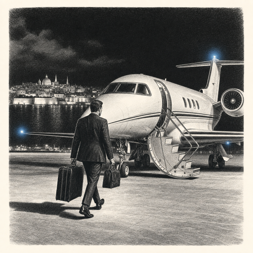
A few weeks later Petros returned to the village. He had brought someone with him. A man in his sixties, well dressed but not showy. He spoke German with a slight Bavarian accent. Petros introduced him: this is Wilhelm. I met him three months ago in Zurich. He was looking for a place. I told him about Malta. He is now on his way to settle there. Along the way he wanted to see the village where the Kosaris is written.
Demira brought coffee. Wilhelm sat at Demira's table and told his story slowly.
He said: I was born in Munich in 1962. I built a company in the eighties — precision tools for the automotive industry. When I was forty, the company had two hundred and fifty employees. At sixty, two years ago, I sold it. I received forty million euros in total. I paid tax. What remained was a little more than half.
Kosus nodded. Wilhelm continued.
He said: I loved my company. I loved my city. I was active on the town council. I donated to the local hospital. I paid my taxes without complaint. I was not someone who left. I was someone who stayed. And then, in 2024, the discussion began in Berlin about a wealth tax. And the discussion about inheritance tax. And a new Wegzugsbesteuerung arrived — an exit tax — which means that whoever wants to take his wealth out of Germany must first surrender twenty to thirty percent. And every month came new reports. A wealth tax that would become six percent, then eight, then no, then yes again. Inheritance tax that would rise to fifty percent on transfer to my children. Calculations showing my wealth would shrink by half in ten years without a single bad investment on my part.
Alkion said: so you decided to leave. Wilhelm said: I did not decide. My accountant called me in January this year and said: Wilhelm, you must choose now. Switzerland, Malta, Singapore, or staying. If you stay, you know how it ends. I asked for figures. She gave them to me. In Germany my net worth in fifteen years would be between seven and twelve million. In Switzerland between eighteen and twenty-two million. In Malta between twenty and twenty-four. In Singapore between twenty-two and twenty-six. For my children the difference was even larger, for inheritance tax in Germany would take half of what I left, in Malta a fraction of that.
Klytia said: so you chose Singapore. Wilhelm said: no. I first chose Switzerland, because it was close and because I had often been there already. I lived there three months and did not feel at home. Switzerland is comfortable, but it is not Europe as I know Europe. It is a village in a valley. I still wanted to serve Europe. Only no longer Germany in the way Germany asked of me.
Petros said: and then you met me. Wilhelm nodded. He said: Petros told me about Malta. Not as a tax haven. As a place where the Knights had defended Europe. As a place where the memory of something old still lived. As a place where people with wealth could consciously choose to stay within Europe instead of going to Singapore. Petros also told me about the Kosaris and about Kosus. He told me about the cathedral where Sleeping Beauty sleeps. I do not believe fairy tales at once. But the image did not let go of me. I thought: if there is ever a place where my money can have a purpose instead of merely propagating itself, it is there.
Wilhelm looked at Kosus. He said: I am not going to Singapore. I am going to Malta. I bought a house there three weeks ago. I will live there. I will no longer pay German tax on my wealth there, for it no longer exists. I will pay in Malta what Malta asks of me, and that is less. The money I save I want to use for Europe. I do not yet know exactly how. I am a toolmaker, not an ideologue. But I am looking for the place where my money can do something.
Kosus said: do you have a brother? Wilhelm said: I have a brother. Two years younger. He was co-owner of the company. He got his share, twenty million. He left for Singapore three months ago. He calls me a romantic for staying in Europe. He says Europe is finished. Singapore is new. Young people with vision live there. The climate is friendly there. Taxes are low there. There is no political fuss there. He is right on all these points. And he is wrong on one point. His money is lost to Europe. For good. Even when he brings it back in twenty years, he will no longer be able to bring it back as European capital. It will then be Asian capital that happens to invest in Europe. That is a difference my brother does not see, and that I have learned to see.
Demira said: how many people like you are leaving? Wilhelm thought and said: Germany alone, ninety-seven thousand people in 2025. In 2021 it was sixty-four thousand. Millionaires leaving their home country — worldwide, one hundred and sixty-five thousand in 2025. About five hundred of them German millionaires. Together they take with them nearly two billion euros. I read that in the Neue Zürcher Zeitung. It will not stop. It will increase. More every year. When Germany does not change — and Germany will not change, for its politics is incapable of it — in five years there will be no large fortune left in Germany that has not departed.
Kosus said: to where? Wilhelm said: on the 2026 destination list, according to the same report, are Singapore, Italy, Switzerland, Greece, Hong Kong, New Zealand. And in southern Europe, notably Malta, Portugal, Cyprus. Of every ten German millionaires who leave, about three or four go to places outside Europe. That is the real loss. For the rest there is at least hope that the money remains within reach when Europe wants to build something again.
Alkion said: what should Malta do? Wilhelm said: Malta must hold firm. It is being pressured by Brussels to abolish its fiscal regime. As long as Malta does not let itself be abolished, it remains the destination that makes the difference between European and lost capital. When Malta does yield and gives up its regime, Europe loses its last vault. All the money then goes to Singapore. That is a strategic disaster the people in Brussels do not understand because they have never built a company themselves.
Kosus said: do you want to help build the auberge in Valletta? Wilhelm said: yes. That is exactly where I want to go. I have no children who took over the company. I do have something I want to pass on. If the Kosaris exists and the auberge becomes the place where people like me can offer their capital for the rebuilding of Europe, then I want to be one of the first there. I will not offer all forty million. I have children and I have a life. But I want to bind ten or fifteen million to the auberge. Under conditions. That the auberge never becomes a political party. That the money is never used for anything I would not approve of in my lifetime. That there is transparency about where it goes.
Kosus said: that is exactly how it works. It is not turned into a political party. There is no investment in shares. It is preserved. When something is built somewhere in Europe that fits the Kosaris — a school that restores the primal instinct, a municipality that adopts Nova Democratia, a farm that feeds itself without subsidy, a factory leaving a country with a polluted denominator and resettling in Malta — then your money can go there. Under the auberge's supervision. Never as a gift, always as an investment with conditions. So that the money works while it waits.
Wilhelm said: that is the best proposal my accountant and I have heard in two years. When do I sign? Kosus said: you sign nothing. You move to Malta, you meet Petros's people there, you see the auberge, you talk with the first four or five people who have already signed, and then you decide yourself. We do not recruit. Whoever wants to join comes of free will. Whoever does not see it stays away. Both are fine.
Wilhelm stayed for dinner that evening. When he left, he said to Demira: your bread is better than the best in Munich. I will miss it. Demira said: come back whenever you want to taste it again. I am here.
Kosus says: whoever brings his money to Singapore brings it to a place from which it can no longer come home. Whoever brings it to Malta brings it to a vault belonging to Europe. You see the difference only on the day you want to build something. On that day Malta is reachable and Singapore is too far.
Tale 29
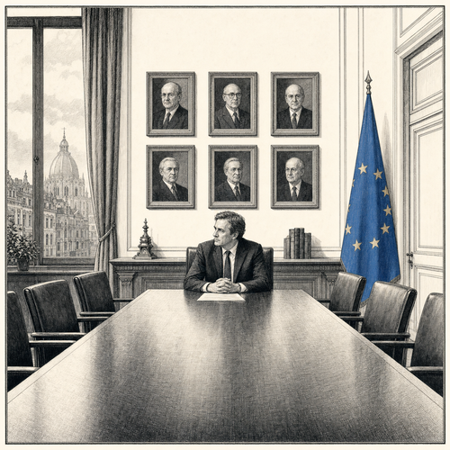
One evening Kosus, Petros, Demira, Alkion and Klytia sat in Demira's kitchen. Petros had received news from Malta. He brought it as a tale.
He said: there is a young minister in Valletta. Her name is Andreana. She is thirty-three years old. She is minister of finance in the current Maltese government. She is one of the seven knights — young for that order, but admitted because her grandmother also stood in the tradition. Last week she went to Brussels for a meeting of the Ecofin Council. She came back yesterday. I spoke with her this morning on the phone. I will tell you what she went through.
The meeting concerned the so-called Pillar Two directive. That is a European and international agreement that every company must pay a minimum tax of fifteen percent on its worldwide profit. It sounds reasonable. In reality it targets countries with lower corporate tax burdens — Ireland, the Netherlands (through its constructions), Cyprus, Malta. Malta especially is targeted, because Malta has a system whereby foreign companies pay thirty-five percent but can reclaim up to thirty percent if they meet certain conditions. Net, it comes to about five percent. That is legal. That is transparent. It has been in Maltese law since 1994.
Andreana sat in the meeting. Beside her sat the German minister. Across from her the French one. The Dutch minister was there too. The agenda was: how do we accelerate the implementation of Pillar Two so that Maltese and Cypriot corporate tax is effectively fifteen percent by 2028?
The German minister opened. He said: we can no longer accept that tax-haven practices exist within the European Union that undermine our fair competition. Germany loses hundreds of companies every year to countries like Malta, and it costs us billions in lost tax revenue.
Andreana wanted to respond. The chair gave her the floor. She said: my esteemed colleague, I must correct your claim. Germany does not lose companies to Malta because Malta has lower tax. Germany loses companies because Germany has driven up its labour costs and its energy costs by sixty-three percent in twenty years. When a German manufacturer relocates his production, he does not go to Malta — Malta has no industrial base for heavy manufacturing. He goes to Poland, Vietnam, or China. What we receive on Malta are not your factories. What we receive are entrepreneurs and investors who would otherwise go to Switzerland, Singapore, or Hong Kong. If you abolish our regime, they will not go back to Germany. They will go outside Europe. You win nothing; you only lose what we kept within reach.
Silence fell. Then the French minister spoke. She said: madam, your argument is rhetorically appealing, but the figures indicate that Malta's tax regime directly contributes to what we call fiscal erosion. Andreana said: I have figures here from this morning. France lost ninety thousand wealthy residents to abroad in 2025. In 2020 that was thirty-two thousand. Your curve is steeper even than Germany's. We receive about three thousand of them per year on Malta. Without us they would still take their wealth to Dubai or Singapore. I invite you to place the curve of your own wealth flight beside our revenue figures. Then you will see that we are not your problem. We are what remains of your problem after you have refused to name its cause yourself.
The Dutch minister took the floor. He said: Malta must understand that solidarity within the Union also means fiscal coordination. Andreana looked at him and said: solidarity is not the small country adopting the large country's regime. Solidarity is the large country putting its own house in order instead of demanding that the small country's door be boarded shut. The Netherlands lost ten thousand millionaires in 2025. Your pension fund of one thousand seven hundred fifty billion euros is nearly half invested in bonds of countries that are unsustainable. If one of those countries falls, your pension fund falls with it. At that moment Malta is one of the few places in Europe where you can still find capital to carry your pensions. And you want to abolish Malta. My dear colleague, you are sawing off the branch you will sit on when your own branch breaks.
The meeting was adjourned. Andreana left the hall and found in the corridor a young aide to the Irish minister. He whispered to her: thank you. Ireland should have said that too. We dare not. Stand firm. We stand behind you even though we cannot say it openly.
Andreana flew back to Valletta that evening. She thought long in the plane. She called me, said Petros, while she was still in the car from the airport to her house. She said to me: Petros, I no longer know whether this game can be won. I do know we must not give up. Every day we do not surrender Malta is a day capital remains within Europe's reach. She said: help me keep holding on.
Kosus said to Petros: tell her we help her. Tell her we are writing a book in which what she does is explained for everyone who is not in Brussels and is not fluent in German Wegzugsbesteuerung jargon. Tell her there are thousands of people who agree with her and who today do not know they agree with her. Tell her Malta does not yield.
Kosus says: the smallest minister of the smallest member state can render the greatest service to Europe through one thing: not yielding. Whoever yields helps no one. Whoever holds firm helps everything that comes after him.
Tale 30
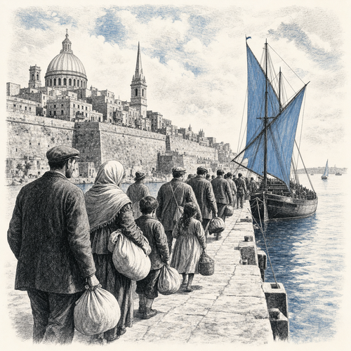
Petros came back the following evening. He had brought an old document. On parchment. In French. Dated 1798.
He said: this is an account written by my great-great-grandfather, Édouard de la Rochefoucauld. He was one of the last Knights to leave Malta when Napoleon came. He wrote his account while travelling, in an inn in Sicily, in the days after the flight. I will tell you what it says.
In June 1798, he wrote, Napoleon appeared before Malta with a fleet of four hundred and twenty ships. We had fewer than two hundred knights. The Grand Master was old and weak. He hesitated. Napoleon asked for free passage for water and supplies. The Grand Master refused at first. Napoleon landed troops at several points on the island simultaneously. Our defence broke within thirty-six hours. On the third day the Grand Master negotiated surrender. We were forced to leave the island.
In two weeks Napoleon plundered everything we had gathered on Malta in two hundred and sixty-eight years. The gold of St John's Cathedral. The silver statues of the saints. The books of our library. The jewels of the lady donors. Everything was loaded onto his ships and taken toward Egypt. Along the way most of it sank in the Battle of Aboukir, when the British destroyed the French fleet. Our treasures have lain on the floor of the Mediterranean ever since.
Édouard continued: this was not merely a military defeat. It was a spiritual murder. Napoleon knew what he was doing. He did not take only the gold. He took the signs by which we recognised ourselves. He understood that an Order without its signs is no longer an Order. We left Malta with what we wore on our bodies. I wore this cross you see today, that you will see until I die, and that my children will wear until they die. That was all I had.
Petros rolled the parchment shut. He said: that was the first exodus. In 1798. It took us two hundred years to recover from it even a little. The seven of us who now carry the tradition are the descendants of the four hundred knights who survived. We are few, but we are present again.
Kosus said: and the second exodus? Petros said: it is under way. For thirty years now. It does not come as an army. It comes as a series of decrees. The 2016 ATAD directive. The DAC directives that force information disclosure. The EU Code of Conduct that, without legal basis, still works as pressure. The EU list of non-cooperative jurisdictions. Pillar Two from 2028. What Napoleon did in ten days with cannons, Brussels does in thirty years with forms. The result is the same: Malta is plundered. No longer of its gold. Of its fiscal breathing room. Without that room, Malta is poorer, less entrepreneurial, less attractive to the capital we need for the vault where Sleeping Beauty sleeps.
Klytia said: why does Brussels do this? Petros said: not out of malice. Out of a lack of insight. The German and French ministers sitting on Ecofin have never built a company themselves. They think in totals — the total tax theoretically levied in the EU, the theoretical distribution. They do not see it as individual movements — the individual entrepreneur choosing between Munich and Zurich and Malta and Singapore. They think: if we abolish Malta, the money stays in Germany. They do not see that it goes outside Europe. They miss the second-order effects. That is not malice. That is a blind spot, and it is the most expensive blind spot of this century.
Demira said: can we do something? Petros said: you can write the Kosaris. You can include the story of the second exodus in the Kosaris, so it is known not only in the meeting rooms of Brussels, but also in the kitchens of the Netherlands, Germany, France, Italy. When a million people understand what Malta is and why Malta must not be abandoned, the political pressure on Brussels changes. Not quickly. But definitively. Every reader who passes on his Kosaris moves one stone on the dam. When there are enough stones, the dam holds.
Kosus said: and Andreana? Petros said: Andreana stands today. She will stand tomorrow. We do not know whether she will stand the day after. That depends on whether we are fast enough with what we are making here. This is a race. Brussels's decrees continue. The Kosaris continues. Whoever reaches a million people first wins. Not in a political sense. In a memory sense. And memory ultimately determines politics, even though no one sees exactly when that happens.
Kosus says: the first exodus of Malta came with cannons, in ten days. The second exodus comes with forms, in thirty years. Both plunder what the generations have gathered. Whoever knew the first but does not see the second has become the same blindness that made the first possible.
Part IX
In which Malta makes a choice that does not take her out of Europe, but does take her out of a policy that drains her.
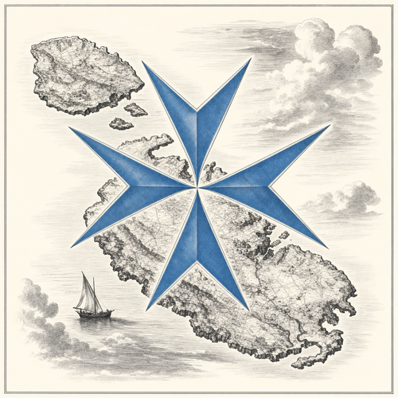
Tale 31
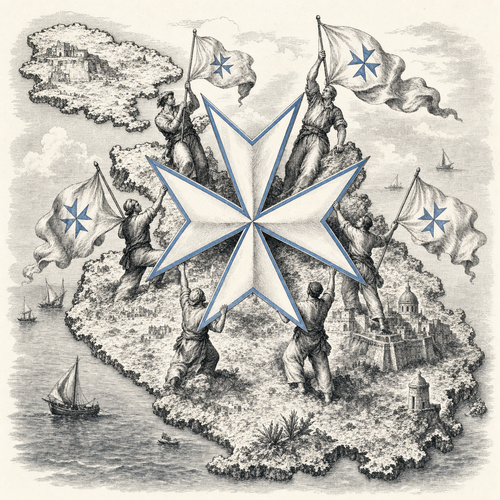
Petros came back from Malta a week after he had told the story of the second exodus. He carried a dossier in a leather folder. He laid it on the table before Kosus.
He said: Andreana gave me this. She calls it the exit. I will explain it to you.
Malta remains in the European Union, he said. No departure. No Brexit. But Malta takes a decision she did not dare take three years ago. She officially declares that she retains her fiscal regime for non-Maltese wealth holders, despite all pressure from Brussels. She accepts being placed on the EU list of harmful practices. She accepts that Germany and France will attack her. She accepts that proceedings will come before the European Court of Justice. She accepts that a sanctions list will follow. And she accepts that as a cost. Not as shame.
Kosus said: why now? Petros said: because Andreana has calculated how much capital Europe has lost in the past three years to Singapore, Hong Kong, New Zealand, Dubai, and the United Arab Emirates. About two hundred fifty thousand millionaires since 2023, cumulatively. She estimates that three hundred billion euros in liquid wealth has been taken out of Europe that will never return, not even when Europe desperately needs it in fifteen years. She estimates that another four hundred billion will follow in the coming three years if nothing changes. She says: Malta can absorb part of that. If we do the exit — if we emphatically maintain our regime and publicly communicate that we are Europe's vault — then a significant share of that capital will come to us instead of Singapore. We are talking about one hundred to one hundred fifty billion euros that can remain within Europe's reach instead of being lost for good.
Alkion said: how does Malta communicate that? Petros said: that is exactly where the breakthrough lies. Until today, Malta has apologised for her regime. She has said: it is legal, it has been in our law since 1994, we are transparent. She has behaved like someone caught out. Andreana says: we stop doing that. From now on, Malta says something else. We say: we are the vault of Europe's rebuilding. We accept the sanctions list. We accept the criticism. And we invite every European wealth holder who would otherwise go to Singapore to land here instead. Under one condition: that the capital remains available for European rebuilding on the day the vault is opened.
Klytia said: which day is that? Petros said: the day something can be built in Europe. Today nothing can be built, for the thorn hedge is thirty years thick and the polluted denominator is not corrected. But in five, ten, or fifteen years — after the first two ships have broken and the third is breaking — a moment comes when someone sits down at a table and says: we must build something new. On that day the vault is needed. If the vault is empty, there is nothing to build with. If the capital sits in Malta, there is something to build with.
Demira said: and the conditions? What does Malta expect from the millionaires who come? Petros said: three things. One: their capital is registered in Malta and stays present, but it is not free to use for speculation. There is a minimum period of ten years within which at least a certain fraction must be invested in European productive assets — companies, infrastructure, agriculture, energy, education. Two: they sign a declaration that they will not act as short-term speculators. Whoever speculates loses his Maltese fiscal status. Three: they contribute to the upkeep of the auberge and the mother house of the Kosaris through an annual contribution that functions as custodial funds.
Kosus said: can Malta do this alone? Petros said: no. Malta needs support from at least two other small EU member states. Andreana is thinking of Ireland and Cyprus. Both are in a similar situation. Both have something to lose if they yield to Brussels. Both may benefit from a coordinated declaration. When three countries do the exit at once, the matter becomes legally and politically different. One country that rises can be struck down. Three countries rising together must be negotiated with.
Alkion said: is there time? Petros said: time until early 2028. At that point Pillar Two must take effect and Malta loses much of her freedom of movement. Before that date the exit must be publicly and legally anchored. Andreana gives herself until December 2027 to bring Ireland and Cyprus along. If it succeeds, the exit is presented in January 2028. If it fails, Malta does it alone and pays the price.
Demira said: can we help? Kosus said: we help by writing the Kosaris. We help by passing on the stories to the people who today, without Malta, cannot understand what is being lost. We help by giving the millionaires torn between Singapore and Malta a reason to choose Malta that goes beyond tax. We offer them the auberge. We offer them Sleeping Beauty. We offer them a story to which they can bind their money without ever having to apologise for it.
Kosus says: whoever is attacked in Brussels for what he is can do three things. Apologise — that does not work. Defend himself on the attacker's terms — that does not work either. Or move the conversation onto his own terms. That is the exit. Malta does that from January 2028, with or without company.
Tale 32
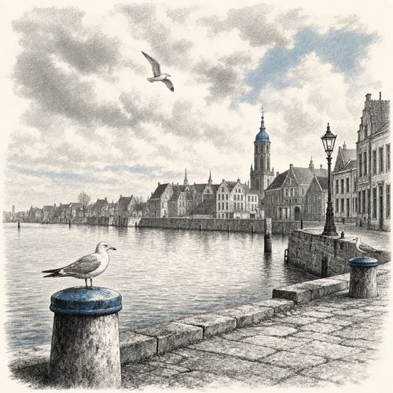
One day Alkion made a voyage to the next harbour, two days' sail to the south. He had not been there for ten years. He went to see how that harbour was doing.
When he arrived he was shocked. The harbour was still there, but it was empty. The quay had been swept clean of fishing businesses. Large luxury residential blocks stood there. Yachts of wealthy visitors lay in the harbour, and a few surviving fishing boats were kept as exhibits by the municipality. In the streets behind the quay, all the shops had been replaced by café-restaurants and boutiques. Alkion asked an old man on the quay: where are the fishermen? The old man said: bought out. The harbour was bought bit by bit by companies coming from outside. The fishermen got good prices. They took the money and moved away. Now the harbour is beautiful and no one lives here who is herself.
Alkion sailed back with his heart in his throat. When he arrived home, he went straight to Kosus. He said: our neighbouring harbour has been sold. The fishermen are gone. The harbour has become a stage set. Will we end up the same way?
Kosus said: we can end up that way. There are three protections we must put in place. The first is that we set a limit on who may buy in the harbour. A harbour resident who leaves may sell only to another harbour resident. That is an old right we have let slip away, and that we can bring back. The second is that we agree among ourselves not to sell to whoever wants to trade the harbour. That is a culture. The third is that we buy the harbour when an old fisherman dies without heirs willing to continue. That pays for itself, since the harbour keeps working.
Alkion said: where do we get the money? Kosus said: from each other. When twenty harbour residents put a small amount into a shared fund every month, within ten years we have a reserve to take over a declining fishery when there is no succession. That is not complicated. It only requires that we agree on it and that we keep to it. That is loyalty. Loyalty costs time, not money.
Alkion went around to all the harbour residents the following week. He had twenty conversations. Seventeen people said yes. Three said no, for they did not believe in it. That was enough. The shared fund began. In the third year the fund bought back the first fishing boat from a widow whose husband had died. In the eighth year the fund bought an old warehouse from an entrepreneur who would otherwise have sold to an investor.
The harbour remained a harbour. Alkion learned something in those years he had not expected. He learned that loyalty is not romantic. It is practical. It is a small monthly sum you do not miss, which in ten years becomes a building you would miss if it were gone.
Kosus says: a harbour does not sell in a single day. It sells over twenty-five years, plot by plot. Whoever watches the first plot saves the harbour. Whoever watches the last plot saves nothing any more.
Tale 33
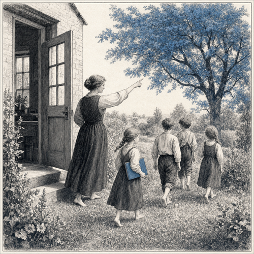
Anthea was ten then. She attended the primary school on the square. One afternoon she came home and said to Demira: grandma, I learned nothing today. Demira asked: what do you mean? Anthea said: I did arithmetic, I did language, I had geography. But I learned nothing I did not already know. I have known the seven times table for three years. The teacher taught us where rivers lie on a map. I know those rivers from my father, who drove along them on holiday. I have not learned a single skill with which I can make something or help someone.
Demira took Anthea to Kosus that evening. Anthea repeated what she had told Demira. Kosus nodded slowly. He said: your teacher is not foolish. Your teacher runs a programme devised a hundred fifty years ago for children who would go to the factory. Then, knowing tables and knowing rivers mattered, because every worker who could read, count, and write had sufficient basis for a life behind a machine. Today no children go to such factories any more, and the programme is still the same. That is the first-order industrial mistake.
Alkion came by the following week to see Demira and Kosus. Kosus told him what Anthea had said. Alkion said: we must do something. Kosus said: we can do something. Take the children out of school one afternoon a week and bring them to the harbour. Let Alkion teach them to mend nets. Let the smith teach them to drive nails. Let Klytia teach them to weave, even if only one thread. Let the gardener teach them to sow. Let me teach them to read. Not the letters they already know. What stands between the letters.
Alkion and Demira went together to the school. The headmaster listened. He said: it cannot fit the timetable. Alkion said: then we do it outside the timetable. Saturday morning. Free to attend. Whoever comes, comes. The headmaster said: that is not education. Kosus, who had come along, said: that is precisely education. What you give is training. There is a difference. Training teaches a child what it must know to be useful to someone else. Education teaches a child what it must know to be useful to itself and its community. We are not fighting the training. We are adding the education.
The Saturdays began that month. Seven children came. After three months there were fifteen. After a year there were thirty-four. Some came because they wanted to learn to weave. Some because they wanted to bring their children along. Some because they felt alone in the village and sought something to belong to. Each got what he sought, and more.
And the children began again to recognise adults who could do something. That was what they had missed most. Anthea learned to weave with Klytia. She was good at it. By the end of her tenth year she had made her first cloth. She gave it to Demira as a Christmas gift. Demira hung it in the bakery beside the drawing of the house with the heat leak.
Kosus says: a school that teaches everything except doing raises people who can do everything except live. Whoever teaches a child on Saturday morning what it does not learn during the week saves not only that child. He also saves himself, for he discovers he still knows something worth passing on.
Tale 34
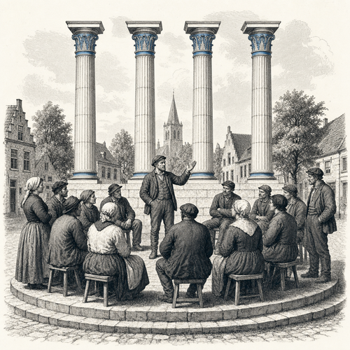
An election came to the village. The mayor who had baked with Demira had finished his second term. There were three candidates to succeed him. Two from the usual parties. One focused on safety, the other on youth. And there was a third candidate. Her name was Sofia and she was thirty-two. She had no party. She had a programme that fit on one side of a sheet of paper.
Sofia came to Demira's bakery. She asked: may I tell you something? Demira said: sit down. Sofia said: I want to govern the municipality on ten measurable goals instead of on party interests. I have written them out. Economic activity, employment, education quality, care, safety, housing, climate, social cohesion, culture, and governance transparency. Each goal gets a score. Each year the score is evaluated. If a score stays below twenty percent of the goal, the alderman responsible for that field resigns. Laws the municipality makes have an end date — five years for ordinary laws, ten for important ones. When a law lapses, it goes through a citizens' council that decides whether it is renewed. And every citizen gets two votes — one for the party of his choice, one for the performance of the sitting administrators.
Demira said: that is not what a village council does nowadays. Sofia said: that is why I am standing. The village council nowadays talks about party colours and about conflicts. I want us to talk about goals and results. When there is conflict, that is a sign the goals are not clear. When the goals are clear, the conflict disappears or becomes productive.
Demira said: where does this approach come from? Sofia said: I read a book. Someone called Kosus described it. It is called Nova Democratia. I did not invent it myself. I am applying it to our village.
Demira sent Sofia to Kosus. Kosus had a long conversation with her. He said at the end: you adapt what you have devised to what the village can bear. That is the right order. Whoever applies a model as though it works the same everywhere practises ideology. Whoever adapts a model to the place where he lives practises governance. You are a governor.
Sofia won the election by eighteen votes. In her first year she changed three things. She published all municipal expenditures online. She had citizens drawn by lot for the citizens' council that evaluated lapsed laws. She showed a dashboard every quarter with the ten core fields and their scores.
In the second year the dashboard for housing fell below twenty percent. The housing alderman resigned. A new alderman came — the mason's wife in the village. She had been on the waiting list herself for sixteen years. She knew where the problem lay.
In the third year a neighbouring municipality began doing the same thing. By the fifth year it was seven municipalities. By the tenth year it was a movement that had acquired its own name without ever having been officially declared.
Kosus says: a government held to measurable goals is not perfect. It is human. Whoever makes the mistake of demanding perfection gets no government, he gets a servant. Whoever demands that government grow with his village gets a fellow citizen. A fellow citizen is enough.
Tale 35
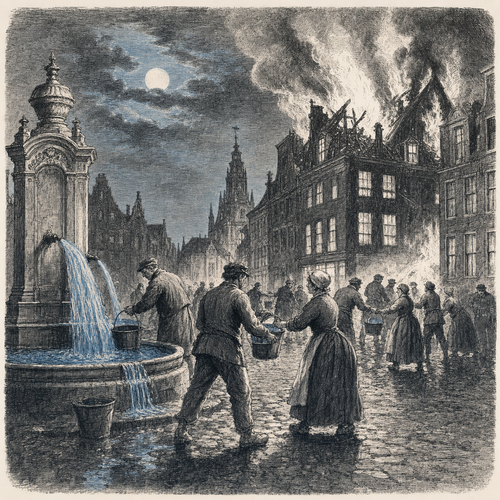
One evening a warehouse caught fire in the village. It was not a catastrophe. No one was inside. The fire brigade came. The warehouse burned for a quarter of an hour. What was inside was not essential — it was stock belonging to an importer who already had everything elsewhere.
The fire itself was not the point. What struck Kosus was how the people watched it. They stood on the quay in a half circle. They held up their phones to film. They did not speak to one another. They posted their footage on social media with a short caption. They waited to see how others would react to it. Some got a hundred likes and smiled. Some got ten likes and put their phones away.
When the fire was out and the warehouse a black skeleton, the people went home. They had discussed nothing. They had agreed nothing. The warehouse was demolished the next day. A new warehouse arrived. No one knew the owner of the old one. No one knew the owner of the new one. It seemed as though nothing had happened.
Kosus walked back with Demira to her bakery that evening. She said: it was strange. Kosus said: it was symbolic. It was the burning city from my dream, in miniature. But no rider departed. Everyone stood still and filmed. And the bag with gold, book, instrument was not carried away. It stayed in the warehouse. It burned with the rest.
Demira said: is that what you see when the great city burns? Kosus said: that is what I fear. When the three storms come, there is the possibility that the people on the quay will stay standing with their phones in hand. They will film the storm. They will post the footage. They will wait for likes. And meanwhile the bag will burn.
Demira said: how do we prevent that? Kosus said: by knowing beforehand who the rider is. That is not one person. That is a group of people who know of one another that they are willing to carry something away. When the fire comes, none of them hesitates. They pick up the bag and leave. They know who takes over from them at the fire. They know the rest of the people stay on the quay filming. They do not blame them for it. They carry what must be carried. Whoever understands later what happened joins those who already went.
Demira said: how do I know whether I am a rider? Kosus said: you know it through daily acts. You rise at four. You bake bread without complaint. You give bread away to those who cannot pay. You know what a sack of flour weighs and you do not let yourself be deceived. You teach children on Saturday morning how an oven works. Those are the acts of a rider before the horse is saddled. Whoever does these acts is ready. Whoever does not stays on the quay.
Demira said: is that not harsh toward those who stay on the quay? Kosus said: it is not harsh, it is real. We do not judge them. We take what we can carry and we leave without looking back. Whoever wakes later can follow. The road is open. The direction is known. Whoever stays on the quay filming until everything has burned cannot later say he did not know. He knew. He chose differently. That is his right.
Kosus says: a fire is not a catastrophe when the bag has been carried away. A fire is a catastrophe when the people stand on the quay filming until it is too late. We do not choose the fire. What we do with the fire, we do choose.
Part X
In which the energy for a rebuilt Europe comes from the tropics, and cooperation with the equatorial countries becomes the shape of a new relationship.
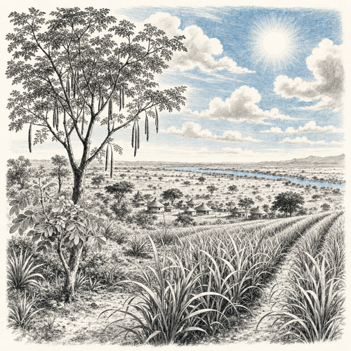
Tale 36
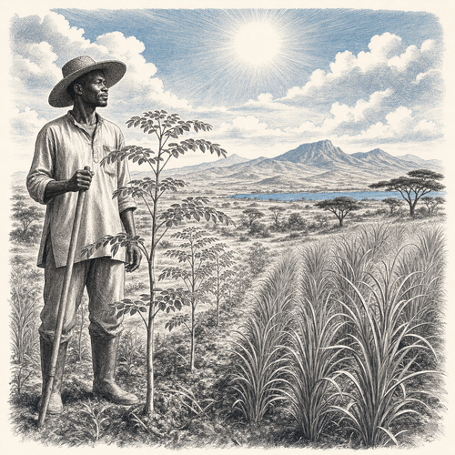
In the year Anthea turned fifteen, a guest came to the village who had travelled far. His name was Mamadou. He was a Mauritanian farmer. He came from a village five hundred kilometres south of the capital, in a region that had been desert forty years earlier.
Kosus had invited him. Petros had made the connection. Mamadou spoke French, modest English. Kosus translated. They sat at the table with Demira, Alkion and Klytia.
Mamadou said: my village had no trees when I was born. The ground was red. There was sand between our teeth at every meal. My father was a herder. He had forty goats. When I was ten, he had twelve left. When I was fifteen, he was dead.
Fifteen years ago someone came to our village. He was an agronomist from Belgium. He carried a plant with him, tall grass with thick stalks. He called it Juncao. He said: if you plant this, it grows in ground where nothing else grows. It binds the soil. It holds water. It yields biomass. What you do not use yourself, you can sell to Europe.
We laughed at him, said Mamadou. For thirty years we had seen people say they would bring something. We no longer believed it. But the agronomist kept coming back. He planted a small plot of ten Juncao plants on my uncle's land. He tended it himself. After three months it was taller than a man. We could not believe our eyes. After a year there was a field of three hectares. After three years the whole village had Juncao. We did not need to buy fertiliser. We hardly needed to water it. The rain that fell stayed in the ground instead of washing away.
Today, said Mamadou, my village has two hundred hectares of Juncao. We sell to a refinery in Nouakchott that turns it into ethanol. That ethanol goes to Europe. Our children go to school. We have a doctor. We have electricity. My brothers did not leave for the coast to cross over. They stayed home because there is work at home. That is what a plant can do when an agronomist persists for fifteen years and a European company buys the ethanol at a fair price.
Klytia said: how much do you earn? Mamadou said: my family receives about two thousand euros per hectare per year net. Two hundred hectares gives us about four hundred thousand euros a year, shared among twenty families. For our region that is a fortune. In Europe it is an average income for one family. I do not know which of the two is true. I do know we are no longer poor.
Kosus said: and what happens to the money Europe pays your village? Mamadou said: part goes to the school. Part goes to the clinic. Part goes to our own infrastructure — wells, roads, storage. Part goes to our children studying in Nouakchott who then come back to work as engineers at the refinery. We keep the money in the region. We do not spend it on things we do not need. In fifteen years we have learned what a guilder is worth.
Alkion said: and Europe? Mamadou said: Europe gets our ethanol. Your industry consumes it. Your cars run on it. Your ships sail on it. We earn. You save. Both win. That is a trade relationship such as your grandparents knew before the imperial age, and such as we make possible now on the basis of equality.
Kosus said: how many villages like yours are there? Mamadou said: in Mauritania, now two hundred. Growing to a thousand in ten years. Across all of West Africa together, perhaps ten thousand in fifteen years if it succeeds. Every village supplies biomass. Every tanker sailing to Rotterdam brings your energy home. We build without subsidy. We build with a trading partner who honours his contract. That is enough.
Alkion said: what do you ask of us? Mamadou said: one thing. Keep honouring our contract. When in five years someone in Brussels decides we no longer meet your sustainability rules because we filled in a new form incorrectly, and our ethanol is refused, our village falls back into poverty within two years. When you honour our contract, we keep building. We ask no more. We are not victims. We are trading partners. Treat us as such.
Kosus says: a farmer who had no trees fifteen years ago and today sends his children to school is a partner. Treat him as a partner and Europe gets its energy back. Treat him as needy and both sides lose what they could have won.
Tale 37
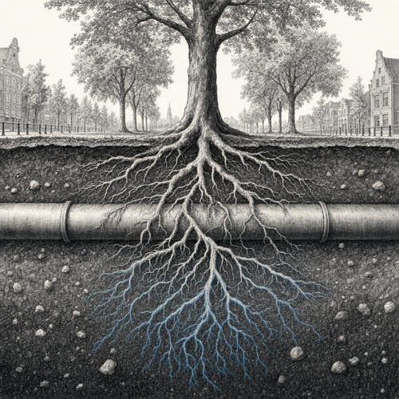
A few evenings later, Kosus, Demira, Alkion, Klytia and Petros sat around a map Petros had brought from Malta. The map showed the Mediterranean, with Europe at the top and Africa at the bottom. Arrows were drawn on it. Some went from north to south — goods from Europe. Some went from south to north — ethanol from the Sahel.
Petros said: the pipeline is coming. Not just one, several. There is already one from Algeria to Italy for natural gas. A second is coming from Morocco to Spain for hydrogen. And a third — the most important — is coming from Mauritania via Morocco to southern Spain for ethanol. It is still in planning. It will be built between 2028 and 2033. When it is ready, part of Europe's energy needs will come from the tropics in liquid form, transportable by pipe instead of by tanker.
Alkion said: that is a great dependency. Petros said: it is a great dependency. That is exactly the point. We are now dependent on oil from the Middle East, gas from Russia (which we are now again trying to block), solar panels from China. Every dependency is a risk. The question is not whether we are dependent — we always are. The question is with whom we are dependent, on what terms, and whether the other party is also dependent on us.
Klytia said: is Mauritania dependent on us? Petros said: yes. Without the European buying market, Mauritanian Juncao production is not a viable business model. We are the customer, they are the supplier. We need each other. That is mutual dependency. In contrast to our dependency on Chinese solar panels, where China does not need us. It has its own enormous home market. We are a small part of its turnover. When it wants to cut us off, it costs it nothing. When we want to cut it off, it costs us everything. That is asymmetric dependency. That is dangerous.
Kosus said: and the pipeline? Petros said: the pipeline is a physical connection between us and Mauritania, Morocco, Senegal. Once it lies there, it is a physical fact no one quickly removes. It requires maintenance, which creates work for both sides. It requires protection, which creates shared security interests. It requires trade contracts lasting thirty, fifty years. That is exactly the kind of connection Europe and its neighbouring states have not had for a hundred years. It is not imperialism — the goods come from African hands. It is not development aid — there are no subsidies, only contracts. It is trade at eye level.
Demira said: why was this not done sooner? Petros said: because Europe thought it could provide for itself. When we heard we could put solar panels on our roofs and windmills in our waters, we thought: we do not need Africa. We are our own enterprise. Fifteen years later we see that the solar panels do not come from Europe but from China, and that the windmills do not turn every day. We overestimated our roof. We underestimated what the people on the equator could do. The sun stands high there year-round. Biomass grows there three to four times faster than with us. We should have cherished our connection with them instead of believing we could replace it with self-sufficiency.
Klytia said: and the roots? Kosus looked at Petros. Petros said: the roots of Juncao go three metres deep into the Mauritanian earth. They hold sand that would otherwise blow away. They hold water that would otherwise evaporate. When you have a field of Juncao, the ground changes within three years. The temperature under the plant is three to six degrees cooler than the surroundings. Insects return. Birds too. Small animals that had disappeared ten years earlier are sighted again.
When we take ethanol from those villages, said Petros, we take not only fuel. We also take a more climate-friendly climate around the equator. We help ecosystems recover by giving them the economic justification to keep existing. That is a secret the European green movement has discovered only slowly. The best way to protect an ecosystem is not to declare it a protected area where no human may come. It is to build a trade chain within which the ecosystem becomes economically valuable to the people who live there. Then they protect it themselves, every day, without law or subsidy.
Kosus says: a pipeline connecting two continents on the basis of mutual dependency is more than a pipe. It is a handshake in steel held for thirty years. Whoever builds such handshakes builds a world that endures beyond him.
Tale 38
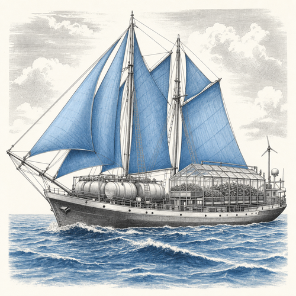
One day Alkion received a visit from a technician. The man came from the Netherlands but had spent the last ten years in Rotterdam working on a new kind of ship engine. His name was Ruud. He carried a bag with drawings and a small model of an engine.
Ruud said to Alkion: your boat now runs on diesel. Four to five thousand euros a year in fuel, I think. Alkion said: a bit more. Ruud said: I want to propose something. I have a SOFC — solid oxide fuel cell — adapted for small fishing boats. It runs on ethanol. It is quieter than a diesel engine, about as powerful, and it uses about a third less fuel per hour. It costs more to buy. But once you have used it for six years, it is cheaper than what you have now.
Alkion said: where does the ethanol come from? Ruud said: from Mauritania, via the pipeline that will be ready in 2033. For now it comes by tanker to Rotterdam and then by smaller ships to the harbours along the coast. Next month the first delivery is expected at your harbour.
Alkion said: how many boats in this harbour qualify? Ruud said: of the twenty-two boats you now have, nine qualify for this conversion. The rest are too old or too small. For those nine boats, if they all convert, we need a small harbour tank of fifty thousand litres. That tank comes with a government advance you repay together to the supplier over eight years.
Alkion said: and the investment in my engine? Ruud said: nearly thirty thousand euros. That is three times a diesel engine. I know it is a lot for a fisherman. But there is a fifty-percent subsidy for the first ten boats that convert. Your effective price is fifteen thousand. You can earn that back in four years on fuel savings.
Alkion thought. He went to Kosus. Kosus said: do it. Alkion said: why? Kosus said: because otherwise, in ten years, you will have the last diesel engine in the harbour and no one will want to repair it any more. And because every litre of ethanol you use sends six to eight euros to Mauritania. Four litres for your hour of work brings thirty euros to Mamadou's village. That is more than aid money has ever achieved. That is what we call two communities, one supply line.
Alkion converted his boat. It was out of service for three months during installation. He lost that income, but Demira brought him bread and Klytia helped his wife with a winter coat for the children. When the boat came out of the yard, it was different. It sounded different. It did not vibrate. The fuel tank was smaller. The smoke from the exhaust was gone.
Alkion sailed his first trip. When he returned with a normal catch for that time of year, he said to Demira: it feels like a new boat. Demira said: it is still your grandfather's boat. Alkion said: that is exactly what it is. It is my grandfather's boat, learned from my father, improved by me. And the fuel it used today grew on ground that was desert fifteen years ago. Two grandfathers. One voyage.
Kosus says: a boat of your grandfather's with an engine from your century, fired by fuel from a country you did not know fifteen years ago, is more than a boat. It is the shape of how a small continent stays great without ever making another small.
Part XI
In which Anthea grows up, two neighbours settle their account forty years later, Jan who had had enough is missed, and Malta awakens.
Tale 39
Anthea turned thirty-five. One morning in May she walked through the harbour village where she had grown up. Demira had been dead ten years. Kosus had been dead eight years. Alkion was still alive, well into his eighties, and he still sat on the quay every morning. Klytia was also still alive. Petros was back on Malta; he would not last the year.
What Anthea saw was this.
Her grandmother's bakery still existed. A cousin of Anthea's now ran it. He baked according to Demira's recipes. Most of the customers who came were still the same families. The prices were reasonable. The bread was still twenty-five kilos for every twenty-five kilos.
The fishermen were still there. Of the twenty-two boats that had once existed, fourteen remained. All fourteen had been converted to ethanol engines. The harbour fund — begun by Alkion — had bought back three boats from heirs who no longer wanted to be fishermen. Those three boats were rented out to young fishermen who had no capital.
The weavers were still there. Four of them. They wove for the local market and for two shops in the capital that sold only locally made cloth. Klytia was their mentor. She was old but still learning. Anthea's daughter, who was seven, had already woven her first cloth.
There was a new school at the quay where children came on Saturdays and during the week. The Saturdays had never stopped. During the week the regular school had begun moving with it — after ten years of debate, the education ministry had acknowledged that the children attending the Saturdays performed noticeably better on the things that really mattered. The regular school had set up an afternoon programme where children could go to the harbour, to the smith, to the weaver, to the garden.
Sofia, who had introduced Nova Democratia, had by then stepped down from her mayoral position — the model had two terms as a maximum. She now sat on the village's citizens' council, chosen by lot, and evaluated the laws that lapsed. Her successor, a young man who said little and did much, kept the dashboard alive.
Anthea had become a nurse at a clinic on the edge of the village. The clinic was small. Two doctors, five nurses, one receptionist. She did her work as Kosus had taught her, though he had not taught her directly. She sat beside her patients and listened. She rarely asked what the machine had said. She more often asked what the patient herself felt. At the end of most conversations her patients said: I feel lighter. She did not do her work quickly. She did it fully.
Anthea walked on. She passed the old tavern where Demira had lit her first oven. The oven was still there. Behind her walked her daughter. Anthea's daughter said: mama, can we stop here? Anthea said: why? The daughter said: something here reminds me of something I do not know.
Anthea smiled. She said: that is because of your great-grandmother. She began here. We will come back tomorrow and I will bake a loaf with you in that oven. The oven is used on Saturdays by the children who want to learn. We are welcome.
Anthea walked on to the sea. She sat on the quay wall where Alkion was also sitting that day. She said to Alkion: how much has changed. Alkion said: everything is the same and everything is different. Anthea said: that is a good description. Alkion said: it is the only description that is right. If you see that everything is the same, you are looking at the surface. If you see that everything is different, you are looking at what lies beneath. In our lifetime we have changed the underside without the surface visibly changing. That is exactly what we hoped to do.
Anthea said: did Kosus see this? Alkion said: he saw it coming. He did not live to see the awakening itself. He said to me, three days before he died: I am going. Anthea will see it. She too will misread it, as the others misread it. Tell her that misreading is not a problem. What happens happens, whether anyone reads it or not.
Anthea looked out over the sea. She thought: he was right. It had happened without anyone precisely seeing it on the day it happened. She sat on the wall and felt the sun on her face. She thought of her daughter, and of the letter she would write that evening to the clinic, where she wanted to work one day less that month so she could go to the Saturdays more often.
Kosus says: a princess does not awaken to a sound. She awakens through the slow return of warmth to her hands. One morning she rises, and she no longer knows when she rose. She is there. Whoever wanted to wake her does not always recognise her. Whoever did not want to wake her does not see her either. She walks among us as though she had always been here.
Tale 40
Henk and Piet, of whom Anthea had heard when she was fifteen, were still alive. Both were now eighty. Both still lived on the same street where Anthea's parents had lived. Anthea's parents' house now stood empty — her parents had moved to a smaller house outside the village.
Forty years earlier Henk had let himself down from his ladder and had gone to sit on the steps next door. He had never again climbed as high as he had wanted to climb. But he had also never again been alone. Piet had become his best friend. In those forty years they had given each other coffee a thousand times.
Now they were old. Piet was still teaching young men who wanted to sit on his steps. He took them along to the old neighbour to help with the hedges — now there was a third generation of neighbours needing help. Piet was always there. He had not worn himself out.
Henk came for coffee at Piet's every Wednesday. They talked about their children, about the world, about their old backs. One Wednesday Henk said: Piet, I have discovered something. Piet said: what? Henk said: that I never knew what being rich was until I stopped wanting it. Piet laughed. He said: I have known that for forty years. I have been waiting for you. Henk said: thank you for waiting. Piet said: that was the least I could do. Whoever is a friend waits.
Anthea heard about this conversation from Piet's daughter, who was a nurse at the same clinic as Anthea. Anthea wrote it down in a small notebook she had kept for years. She noted: Henk and Piet, Wednesday, forty years. Kosus was right. Whoever steps down from the ladder must learn to sit again. Whoever sits on the steps must learn to wait. Both are exercises. Both succeed.
Kosus says: a ladder brings you nowhere but where no one knows you. A staircase brings you among others, and on every step sits someone you can recognise. Your life is not measured by how high you climb. It is measured by how many people you got to know along the way.
Tale 41
Jan had long been dead. He had died when Anthea was twenty, so fifteen years before. His house stood at the end of the quay. It had been inherited by his son — the son who had taken over the car when Jan was sixteen. The son did not live in the village. He had rented out the house, first to an older man, then to a couple who left, then to no one. The house stood empty for three years. The garden ran wild.
One afternoon Anthea walked past the house. Through the hedge she saw that the three apple trees Jan had planted still bore fruit. The plum tree was dead. The grass was high. Where Jan's tea table had stood, an old chair still stood — fallen over.
Anthea called the son. The son lived in Germany. He was surprised anyone called. Anthea said: I want to bring your father's garden back to life. The son said: I do not know if anyone wants to buy the house. Anthea said: I do not want to buy it. I want to rent it, at a low price. I will tend the garden. Whoever you can rent the house to may live in it. I only want the garden.
The son thought. He said: my father would have appreciated that. I will rent the house to the first decent tenant who applies. You may have the garden. No rent. Just upkeep.
Anthea got the key to the garden. She began in March. She had no gardening experience. She was taught by an old woman from the village who had once worked for Jan. She pruned the apple trees. She planted a new plum tree. She set the tea table upright again. She placed a chair — the same chair Jan had used, for it was still there.
In summer Anthea sat one evening a week in Jan's garden. She sat in his chair and drank his kind of tea. She looked at the three apple trees and at the water in the distance. She heard her wife-in-the-kitchen whistling. She heard no whistling, for her wife was at home, not in Jan's kitchen. But she remembered how it sounded when Jan heard it.
She thought: this is what Jan meant. When I look at this garden and nothing needs to be added to make it better, then I have everything I need.
Anthea sat in Jan's garden every week, for twenty years. When she grew old, she gave the key to a younger woman from the village, who in turn took over the garden. The garden stayed alive. Jan stayed alive, in his own way.
Kosus says: a garden tended for two generations in the planter's spirit is more than a garden. It is a living sentence passed from hand to hand. Whoever takes over a garden is not a gardener. He is a punctuation mark in a sentence that lasts longer than his life.
Tale 42
Petros lived another half year after the day Anthea sat in Jan's garden. He had turned ninety-six. He died on Malta, in his own house, with one of the other six knights beside him.
Before he died he wrote a letter. The letter was addressed to Anthea. Why to Anthea and not to Kosus or Demira or Alkion or Klytia? Because they were dead or dying, and because Petros had come to know Anthea during one visit she had made to Malta at sixty. She had come then to the auberge in Valletta. She had seen Klytia's bag, on the wall of a small room on the second floor. She had understood what was in the bag and why it hung there.
Petros wrote to Anthea:
Dear Anthea,
I write to you from Valletta. I am old and I am going to die. When you read this, I will no longer be here. Before I go I wanted to tell you something you can pass on.
The auberge is now a group. It has not become an institution. No bureaucracy has arisen. There is no board perpetuating itself. There are three functions as Kosus prescribed, and they are fulfilled by people who know one another. Every year two hundred people gather. They are delegates from the small houses across Europe. These small houses now number about a thousand. They are spread from Portugal to Estonia and from Greece to Ireland. Each house has between ten and a hundred people who meet weekly. At any moment about a hundred thousand people across Europe are reading the Kosaris. We never wanted more.
The capital has come. About two hundred European wealth holders have settled in Malta since 2027 with the intention of binding their capital to the auberge and the rebuilding of Europe. The total preserved wealth stands near eighteen billion euros. That is not enormous — Singapore receives thirty times more in a comparable period. But it is enough. We never wanted more than we could responsibly keep.
Wilhelm died two years after your last visit. He bound fifteen million euros. His contribution made two schools possible — one in Greece, one in Portugal — and the restoration of an old factory in Germany that would have been demolished without capital. In that factory sixty people today make precision tools, what Wilhelm had done his whole life. He would have found that beautiful.
Andreana is still minister of finance. She is fifty-six. She is one of the longest-serving ministers in Maltese history. She carried through the exit of 2028, and Malta has borne the consequences. We have not become isolated. France and Germany did punish us, but did not destroy us. The EU placed us on every possible list, but Malta still exists, and the capital did not go to Singapore.
The siege of 1565 lasted one hundred and sixty-five days. Our exit has now lasted twenty years. That is shorter than the siege, per capita of effort per resident. In twenty years we have not had as many deaths as in four months in 1565. But we have preserved something worth the effort.
I ask three things of you. Come back to Malta as long as you live. Tell your children about the auberge so they can tell their children. Write down what you know of your grandmother and of Kosus, for young people are coming who will never know anyone who knew them.
I embrace you from afar. Petros.
Anthea read the letter three times. That evening she wrote down what she remembered of Kosus and of Demira. She wrote fourteen pages. She sent them to the auberge. They were included in what later became known as Book Three of the Kosaris — the book dealing with Kosus and the group in the time after their first formation.
Kosus says: an old knight who dies in his own house, with a brother beside him and a letter in the drawer, is not dead. He has become a letter in a sentence others will read. As long as the sentence is read, he is present. Malta was never a building. Malta was always the sentence.
Part XII
In which the book ends as the fairy tale ends: with an invitation.
Tale 43
Kosus was in his final year when he realised he could not write down all forty tales himself. His hand shook. His sight was poor. He asked Anthea, then twenty-five, to come sit with him at home with pen and paper.
Anthea came. She sat beside Kosus at his table. Kosus dictated. She wrote. They did it slowly. Some evenings no more than one paragraph was written. Anthea did not complain. She said: I have time. I work days at the clinic and the evenings are for you.
When they reached the last tale, Kosus said: I know what I want this book to say. Write down what I dictate, exactly as I say it, even when you think I am mistaken. I am not mistaken in this final piece. I know exactly what must be said.
Anthea took the pen. Kosus dictated:
Dear reader,
This book is finished. What you do with it is up to you.
You can put it on the shelf and never come back. Then this is the end of the book in your life. That is your right and no one judges you for it. There are people who need this book at a certain moment and return to it ten years later, and there are people who read it once and carry it with them their whole life without ever opening it again. Both are good.
You can give it to someone you think will read it. Then you pass it on and become one of the carriers. Carriers are more important than writers, for without carriers a writer is a monologue, and with carriers he becomes a dialogue that can last for centuries.
You can read it and do something with it. Then you yourself become a tale retold. You become the baker at the quay in your own village. You become the fisherman who hears the storm. You become the weaver who makes the bag. You become the knight who returns from Malta. You become the mayor who bakes alongside the baker. You become the mother who lets her daughter make her drawing.
You can read it and do nothing. That is allowed too. A book that you read and that touches you without changing you has still done its work. It has brought you near something you did not know. What you did not know, you now know. That may, later, when you expect it least, still go to work in you.
What you cannot do is claim you did not know. You know now. You know of the four layers. You know of the three storms. You know of the bag with gold, book, and instrument. You know of Malta. You know of the small houses. You know of Kosus who sat on the quay and consulted the sphere. You know of Demira and her oven. You know of Alkion and his boat. You know of Klytia and her loom. You know of Petros and the eight-pointed cross. You know of Anthea, who saw colours that were not there. You know of Sleeping Beauty, who sleeps in the auberge in Valletta and waits until we have earned her.
We who pass on this book wait for you. We need not wait long. Time gives itself. We will see you when we see you. Until then: thank you for reading.
Kosus stopped. He said to Anthea: write my name beneath this letter. Anthea wrote: Kosus. Kosus said: write my real name too. Anthea wrote: Jacobus van Merksteijn. Kosus said: write also where we now are. Anthea wrote: Palma, Balearic Islands. She thought a moment and wrote beside it: Malta, in the year the second century begins after the Knights.
Kosus said: that is done. Go home. Sleep. Tomorrow bring this back, and then we will hand it to Klytia, who will bring it to the auberge when she travels there.
Anthea went home. She slept badly that night. She was proud that she had written down Kosus's last words, and she was sad about it, for she realised that what she had written was his farewell, and that not much would come after it.
Kosus died six weeks later. Klytia carried the manuscript to Malta. She handed it to Petros. Petros wept when he saw what it was. He read it once that evening. The next morning he had it copied and began distributing it.
Book One was finished.
What you have now read is Book One. It has been passed to hundreds of thousands of people. Every carrier has added something to it or taken something from it. What lies here today is no longer exactly what Kosus dictated and Anthea wrote down. It has become more. It is shared property. It is yours, now that you have read it.
What you do with it is up to you.
Kosus says: a book does not end with its last page. It ends when the last reader who has read it dies. Then it becomes an old text and enters a new life. As long as one reader lives who has been touched by it, it is a living book. We hope you read it long, and pass it on to many, so that it lives long.
Colophon
De Kosaris — Book One — The Book of Saint Kosus. Recorded by Jacobus van Merksteijn, engineer and publisher, residing on Malta and in Palma.
Published under openvizier.org. Illustrations in black-and-white lithograph with blue accents, in the house style of Het Open Vizier.
"Whoever carries the four pillars is carried by the four pillars."